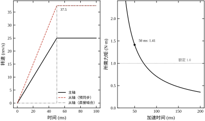
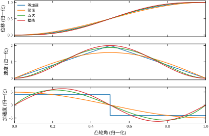
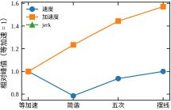
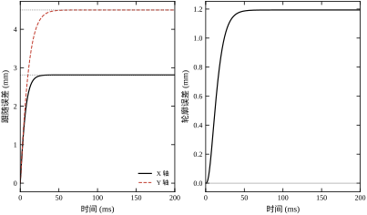
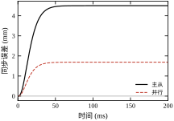
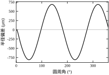
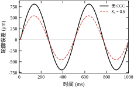
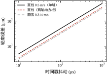
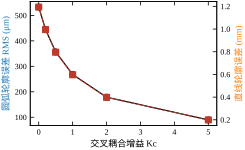
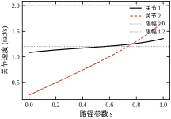

第 97 章把一条参考轨迹从哪来讲清楚了，但整章只服务一个执行器：一条曲线、一个关节、一台电机。真实的设备很少只有一根轴。龙门铣的横梁由两台电机同时推，飞剪的刀辊要跟住行进中的料带，分度盘要在一个节拍里转过 90°，涂胶机的 X 与 Y 必须同时到位，否则胶线会歪。这些场合的验收指标不是“每根轴跟得多准”，而是“两根轴之间差多少”。
这两个指标不是一回事，而且差距往往大得离谱。本章的统一算例里，X 轴自己的跟随误差是 2.813 mm，Y 轴是 4.502 mm，单看任何一个都在“毫米级”，按单轴标准都算不合格但也算不上灾难；可它们俩的差是 1.688 mm，这个差直接变成 45° 直线上的 1.194 mm 轮廓偏差——也就是工件上一条肉眼可见的斜边。更极端的是主从结构：主轴把自己 2.813 mm 的误差原封不动地传给从轴，从轴再叠加自己 4.502 mm 的误差，同步误差直接变成 4.502 mm，轮廓误差 3.183 mm，是并行结构的 2.667 倍。同样的两台伺服、同样的两条轨迹，只因为“从轴跟谁”这一句话不同，工件精度差了一倍半。
一句话概括本章的立场：多轴协调的难点不在于把每根轴调得更准，而在于让几根轴在同一时刻错得一样多；误差本身可以容忍，误差之差不能。 前半句决定了本章一半的篇幅要花在“同步”而不是“跟踪”上，后半句决定了另一半篇幅要花在“怎么量这个差”上。
场景一：龙门双驱。 横梁两端各有一台伺服加减速机，共同推动一个几吨重的滑枕。机械上横梁是刚体，电气上两台电机是并联的。如果左侧电机比右侧快 0.1%，横梁就会被拧成一个微小的角度，这个角度乘上跨度就是导轨的侧向力。跨距 3 m、偏斜 0.1% 的行程差就是 3 mm 的错位，导轨会叫、会爬行、会磨出亮痕。这类设备的验收单上写的不是“定位精度”，而是“双驱同步误差 ≤ 0.05 mm”。
场景二：飞剪与旋切。 刀辊要在一个很短的时间窗内，让刀刃的线速度与料带速度相等，并且刀刃位置与料带上的标记对齐。刀辊由伺服驱动，料带由另一台变频器驱动，两者之间没有任何机械连接，唯一的联系是一个电子齿轮比。这里的“同步”是速度同步加上相位同步，误差以“毫米每米”和“度”两种单位同时出现。
场景三：分度盘。 一个 8 工位的转盘，每 300 ms 转过 45°，停顿 200 ms 让工位做装配。转盘的输入轴由伺服驱动，输出轴经过一个凸轮机构，或者干脆用一个电子凸轮直接生成“停—转—停”的位移曲线。这里的要求不是匀速跟随，而是在停顿段绝对不动、在转位段严格按给定曲线走，因为停顿段的每一次抖动都会让装配头撞偏。
三个场景对应三套不同的数学：电子齿轮是比例关系，电子凸轮是函数关系，交叉耦合是误差反馈关系。本章按这个顺序展开。
第一个数：1.414 N·m，额定的 141.4%。主轴 1500 r/min、齿轮比 3:2，从轴要跑到 2250 r/min，也就是 235.62 rad/s。折算惯量 3.0\times10^{-4} kg·m²，若要在 50 ms 内从静止加速到这一转速，需要力矩 J\omega/t=1.414 N·m，而电机额定只有 1.0 N·m。电子齿轮的第一笔账不是精度账，是力矩账：比值一改，从轴的转速上限就改了，加速时间跟着改，电机可能直接不够。这一条在选型阶段被漏掉的频率极高，因为齿轮比通常由工艺决定，而工艺工程师不关心电机额定。
第二个数：4.502 mm 与 1.688 mm。同一段 45° 直线、0.5 m/s，主从结构的同步误差是 4.502 mm，并行结构是 1.688 mm。原因很简单也很容易被忽略：并行时两根轴都盯着理想参考，各自的误差只由自己的带宽决定；主从时从轴盯着主轴的实际位置，主轴那份误差被当成“正确值”照抄一遍，于是从轴的误差变成“主轴误差 + 自己的误差”。本例中主轴误差 2.813 mm 恰好被完整传递，从轴自身误差 4.502 mm 与之叠加后的净值就等于 4.502 mm——因为主轴误差本来就比从轴小，叠加后从轴反而“追平”了。
第三个数：810.9 μm。R=50 mm、1 Hz 的圆，两根轴带宽 40 Hz 与 25 Hz，轮廓误差峰值 810.9 μm、RMS 532.7 μm。这个数用眼睛看图纸是看不出来的——圆还是圆的，只是被拉成了一个略微倾斜的椭圆。它的主项不是幅值衰减（X 只缩 31.2 μm、Y 只缩 79.9 μm），而是两轴相位滞后之差：X 滞后 2.864°、Y 滞后 4.581°，差 1.717°，乘上半径再折半就是 750 μm。在圆周上，两轴的相位差比幅值差重要一个数量级，这是本章最反直觉的一条。
第四个数：314.2 μm。1 ms 的插补周期，在 0.314 m/s 的圆周速度下对应 314.2 μm 的弧长。若两个轴各用各的插补器、时间戳又对不齐，最坏情况相差整整一拍，就在轮廓上直接加 314.2 μm——相当于把动态误差（532.7 μm）放大了 0.6 倍。同步误差的一大来源不在控制环里，而在“两根轴认为现在是几点”这件事上。
并行（parallel / 各自跟踪）。 上位机算出同一条轨迹，按轴拆成 x_r(t) 与 y_r(t)，分别送给两个伺服。两根轴之间没有任何信息交换。优点是结构最简单、任一轴故障不影响另一轴、加减轴只是加一份配置；缺点是两轴的误差互不知情，带宽差多少，同步误差就是多少。
主从（master-slave）。 主轴照常跟踪自己的参考，从轴的指令由主轴的实际位置（或实际速度）经一个比例/函数变换得到。优点是结构上保证了几何关系——不管主轴怎么错，从轴永远按比例跟着，齿轮比不会被电气误差破坏；缺点是主轴的误差被完整复制，从轴成了“误差的放大器”，而且从轴的动态永远比主轴慢半拍，这半拍在高速时就是可观的轮廓误差。
交叉耦合（cross-coupled control, CCC）。 两根轴各自闭环，但额外算一个共同的误差量——通常是轮廓误差，即实际点到理想轨迹的法向距离——再按增益 K_c 分配回两根轴的指令。优点是直接针对“要减小什么”下手，不改动原有伺服环，可以外挂；缺点是需要知道轨迹的几何（法向），在自由曲线与尖角处法向不唯一，而且在增益过大时会与原有环耦合、引起抖动。
本章的三种结构都用同一组轴参数、同一条轨迹来比，所以差异只来自结构本身。
统一算例是一台两轴直角平台，参数如表 98-1。
表 98-1 统一算例的两轴参数
| 项 | 数值 | 说明 |
|---|---|---|
| 丝杠导程 | 10.0 mm | 电机一转，工作台走 10 mm |
| 编码器 | 2500 ppr × 4 = 10000 counts/rev | 四倍频后的计数 |
| 单脉冲当量（直线） | 1.000 μm/count | 导程 ÷ 每转计数 |
| 单脉冲当量（电机转角） | 0.628 mrad/count | 2\pi/10000，即 0.036° |
| 闭环带宽 | X 40 Hz、Y 25 Hz | 比值 1.600 |
| 闭环阻尼比 | 1.0（临界阻尼） | 无超调 |
| 折算惯量 | 3.0\times10^{-4} kg·m² | 含丝杠、联轴器、负载 |
| 电机额定力矩 | 1.0 N·m | 连续堵转 |
| 插补周期 | 1 ms | 两根轴共用同一节拍 |
| 积分步长 | 0.1 ms | 仿真的数值步长 |
两条轨迹：直线 45°、0.5 m/s、走 0.20 s；圆弧 R=50 mm、1 Hz、走 1.0 s。另有两组辅助算例：电子齿轮（主轴 1500 r/min、比 3:2、啮合 50 ms）与电子凸轮（分度 90°、300 ms、分度盘折算惯量 0.02 kg·m²）。运动学约束算例复用第 96 章的两连杆（0.40 m + 0.30 m），让末端沿一条直线走 0.5 m/s。
两轴带宽取 40 Hz 与 25 Hz 是刻意的：真实平台的 Y 轴通常背着更重的负载（工件、夹具、防护罩），带宽低于 X 轴是常态，比值 1.6 属于“不算差但也绝不相同”的中间地带。若两根轴带宽完全相同，本章一半的结论会消失——这正是很多仿真论文里“同步误差为零”的来源。
所有读数由 code/ch098_sim.py 一次跑出，分 15 段 [0]–[14]，索引在 §98.12.3。正文里每个数字都能指回某一段。
§98.2 把三套数学写清楚：齿轮比的分数化与量化误差、凸轮曲线的四种形状与其峰值、两轴闭环的传递函数与同步/轮廓误差的定义。§98.3 给出十步设计流程，从定比一路走到验收。§98.4 讨论连续情形，重点是“毫米级的跟随误差为什么会变成毫米级的轮廓误差”以及那个 R\Delta\varphi/2 的相位差公式。§98.5 讨论离散情形，1 ms 节拍与时间戳抖动各贡献多少。§98.6 把 CCC 的增益扫描与饱和、稳定性放在一起。§98.7 逐个参数讲意义，§98.8 讲现场怎么选，§98.9 讲优化，§98.10 讲落地（同步误差怎么测、启停怎么排），§98.11 讲边界，§98.12 交代码。
本章只讲“轴与轴之间”这一层，四件事明确外包：
另外三处容易混淆的内容也一并指回：PID 的整定在第 44 章与第 106 章；Smith 预估在第 47 章与第 107 章；这两者解决的是“单轴滞后”，而本章解决的是“两根轴的滞后不相等”。单轴滞后是可以用前馈消掉的，两轴滞后之差不能——因为前馈只能让每根轴更接近理想参考，却不能让两根轴的带宽变得相同。
第一，“同步误差”指两轴跟随误差之差，记 e_{syn}=e_y-e_x，单位 mm，正号表示 Y 落后。它是标量，只对两根轴有意义。
第二，“轮廓误差”指实际点到理想轨迹的法向距离，记 e_n，单位 mm，正负号按法向定义。它是几何量，与轴数无关。
第三，“跟随误差”指单轴自己的参考减实际，记 e_x、e_y，单位 mm。三者关系是 e_n=e_{syn}\cos\theta（45° 直线时 \cos45°=0.7071），本章会反复用到这条投影关系。
第四，轴模型一律取临界阻尼二阶闭环 G(s)=\omega_n^2/(s^2+2\zeta\omega_n s+\omega_n^2)，\zeta=1。这样斜坡输入的稳态误差有闭式 2v/\omega_n，正弦输入的幅相也有闭式，全部结论可以手算复核。真实系统的三环结构在第 95 章，其闭环在带宽附近也近似为二阶，本章的结论可以平移，只是 \zeta 要按实测填。
第五，“协调”与“同步”不作区分，都指多轴之间的相对关系；“跟踪”专指单轴对自身参考的跟随。
第六，所有峰值指绝对值最大值，不区分正负；RMS 指稳态段（直线取 t>100 ms，圆弧取 t>500 ms）的均方根。
误区一：每根轴都调得很准，多轴自然就准。 这是最普遍也最贵的一条。本章的算例里，两根轴的跟随误差分别是 2.813 mm 与 4.502 mm，都在“毫米级”；如果只看单轴指标，把带宽从 25 Hz 提到 40 Hz，Y 轴误差从 4.502 mm 降到 2.813 mm，单轴指标改善 37.5%，看起来很不错。但同步误差从 1.688 mm 变成 0——因为两根轴变得一样了。关键不是“准”，是“一样”。 反过来，把两根轴的带宽同时从 40/25 降到 20/12.5，单轴误差全部翻倍，同步误差却一点不变（比值仍是 1.600），轮廓误差也一点不变。这个结论在 §98.7 会用公式再确认一遍。
误区二：主从比并行“更可靠”，因为从轴永远跟着主轴。 主从确实保证了几何关系不被破坏——齿轮比是结构性的，不会因为编码器丢脉冲而漂移。但它把主轴的误差完整传下去，本章的 4.502 mm 就是证据。更麻烦的是：主轴误差里有一部分是低频的（比如丝杠热伸长、导轨直线度），主从会把这部分原样复制到从轴，而并行不会。所以“主从更可靠”只在“几何关系必须严格保持”的场合成立，在“轮廓精度优先”的场合它更差。
误区三：交叉耦合增益越大越好。 本章的扫描里，K_c 从 0 加到 5，圆弧 RMS 从 532.7 μm 单调降到 89.5 μm，一直没饱和。若只看这条曲线，结论就是“往死里加”。但这条曲线是在线性二阶模型、无噪声、无法向估计误差的前提下算出来的；真实系统里 K_c 一大，法向估计的噪声被放大 K_c 倍灌进两根轴，同时 CCC 与原有位置环形成一个新的耦合环路，增益过大时会在某个频率上产生极限环。扫描曲线的右端不是“更好”，是“模型失效的地方”。
误区四：插补周期越短，同步越好。 缩短插补周期只减小“两轴时间戳对不齐”这一项，对带宽差造成的同步误差毫无作用。本章 §98.5 的账很干净：共享插补器时，两轴滞后同为 T_s/2，轮廓误差一点不增加（只是沿轨迹整体后移 157.1 μm）；独立插补器时，最坏差一整拍，轮廓误差加 314.2 μm。所以正确的动作不是“把周期从 1 ms 缩到 0.5 ms”，而是“让两根轴用同一个插补器、同一个时基”。这是架构问题，不是参数问题。
这两个量经常被混用，因为在一维情形下它们相等。三句话分开：
同步误差是“轴间量”。 它只依赖两根轴的实际位置，e_{syn}=e_y-e_x，与轨迹形状无关。同样的 1.688 mm，在 45° 直线上造成的轮廓误差是 1.194 mm，在 0° 直线上造成的轮廓误差是 0（因为 0° 直线的法向是 Y，e_x 根本不在法向上），在 90° 直线上造成的轮廓误差是 0（对称地，e_y 不在法向上）。同步误差大不等于轮廓误差大，要看它落在哪个方向。
轮廓误差是“几何量”。 它是实际点到理想曲线的法向距离，与轴数、轴的定义都无关。一台三轴设备、一台五轴设备、一台只有虚拟轴的设备，都可以谈轮廓误差。它才是工件上看得见的那个量。
两者的换算靠投影。 45° 直线时 e_n=(e_y-e_x)\cos45°=0.7071e_{syn}；圆弧上 e_n 是径向距离，e_{syn} 没有唯一定义（“两轴之差”在圆上没有几何意义），这时只能用 e_n 本身。本章 §98.4 会给出圆弧上 e_n 的解析式，它与“两轴相位差”直接挂钩——这就是投影关系在曲线上的推广。
一条实用判据：验收单上写“同步误差”的设备，一定同时规定了“在哪个方向量”；没写方向的同步误差指标是不可验收的。 龙门双驱量的是横梁两端的纵向位置差（垂直于运动方向才是错位），飞剪量的是刀尖与标记的纵向相位差，分度盘量的是角度差。三个“同步误差”的物理含义完全不同。
电子齿轮最朴素的写法是一句比例关系：
\theta_s(t)=R\,\theta_m(t)+\theta_0
R 是齿轮比（从轴/主轴），\theta_0 是啮合时的相位预置。三个符号各管一件事，也各自对应一类现场故障：R 错了是“走得快慢不对”，\theta_0 错了是“位置整体偏一截”，t 的时基错了是“走着走着漂了”。
按约束的强弱，电子齿轮分三层。
速度同步：只保证 \dot\theta_s=R\dot\theta_m，不管相位。飞锯在追料带时先做这一层，等速度对上了再去对相位。这一层不累积误差，但也不保证任何位置关系。
位置同步：保证上式在所有时刻成立。这一层要求从轴的指令由主轴的实际位置实时算出，主从结构天然满足，并行结构只有在两根轴都完美跟踪时才近似成立。
相位同步：在位置同步之上，还要求 \theta_0 与工艺标记对齐（比如刀尖对准料带上的色标）。这一层的误差不来自伺服，来自“标记检测到的那一刻，主轴位置采样到了哪”。检测延迟 1 ms，在 375 mm/s 的从轴速度下就是 375 μm 的相位偏差——和 §98.5 的时间戳账是同一笔。
工程上说的“电子齿轮”通常指第二层，第三层要配合飞剪/套准功能单独做。
R=1.5 在浮点里是精确的，R=1.2345 不是。控制器每个周期要算 \theta_s=R\theta_m，若 R 用双精度浮点存，误差在 10^{-16} 量级，走一年也看不出来。真正的问题不在浮点精度，而在驱动器内部用的是整数计数器：主轴位置是一个 32 位或 48 位的 count 值，从轴指令也必须落在 count 上。若 R 是一个无限小数，每拍都要做一次“乘完再取整”，取整误差会以“每拍 ±0.5 count”的形式累积成随机游走——1 kHz 下每秒 1000 次，走一小时就是 360 万次，最坏累积到 1.8 万 count，即 18 mm。
所以工业驱动器一律要求把 R 写成整数分数 p/q，用“分子累加、分母比较”的方式做无误差的整数比例：
\text{acc}\leftarrow\text{acc}+p,\qquad \text{当 acc}\ge q:\ \text{输出一脉冲},\ \text{acc}\leftarrow\text{acc}-q
这样任意长时间的比例关系都是精确的（只要 p/q 精确等于 R），取整误差只在最后一拍出现一次。
问题变成：给一个实数 R，怎么找分母不超过上限的最近分数，以及这个近似会带来多大偏差。 本章的搜索上限取 1000（多数驱动器的电子齿轮分子分母都不超过这个量级），结果如表 98-2。
表 98-2 齿轮比的分数化与量化误差（分母上限 1000）
| 目标比值 | 最接近分数 | 分数值 | 相对误差 | 1 m 行程偏差 |
|---|---|---|---|---|
| 1.5000 | 3/2 | 1.500000 | 0.00 ppm | 0.0 μm |
| 2.0000 | 2/1 | 2.000000 | 0.00 ppm | 0.0 μm |
| 1.2345 | 458/371 | 1.234501 | 1.09 ppm | 1.1 μm |
| 0.7854 | 538/685 | 0.785401 | 1.86 ppm | 1.9 μm |
表里最有用的信息不是“误差很小”，而是误差的量级刚好落在一个脉冲上：1.09 ppm 在 1 m 行程上是 1.1 μm，而单脉冲当量正好是 1.000 μm。也就是说，一个“看起来无理”的齿轮比，用 458/371 近似后，累积到 1 m 才差一个脉冲。这个量级在绝大多数场合可以接受，但它给了一条明确的下限：分数化之后的残余误差不可能低于一个脉冲当量每米，除非把分母上限提上去（分母 10000 时能压到 0.01 ppm 量级，但很多驱动器不支持）。
第二行与第一行值得对比：R=1.5 与 R=2.0 都能精确写成小分数，误差 0.00 ppm。所以能用简单整数比就不要用小数比——把工艺要求的“1:1.2345”改成“458:371”不损失任何东西，而把“1:1.5”写成“1:1.5000”再让驱动器去近似，就是自找麻烦。
电子齿轮在“使能”那一刻，从轴有两种进入方式。
直接啮合：从轴立刻按 R\dot\theta_m 跑。若此时主轴已经在 25 rev/s，从轴的速度就从 0 瞬间跳到 37.50 rev/s。本章算例的从轴角速度是 235.62 rad/s，折算惯量 3.0\times10^{-4} kg·m²，这份动能是
E_k=\tfrac12 J\omega^2=\tfrac12\times3.0\times10^{-4}\times235.62^2=8.33\ \text{J}
8.33 J 在 50 ms 内灌进一根丝杠，等于 167 W 的冲击功率，全部由联轴器和丝杠吸收。现场表现是“咔”一声，然后是反向间隙变大。
预同步啮合：先让从轴按斜坡加速到 R\dot\theta_m，再把齿轮关系接上。本章算例把斜坡定为 50 ms，需要力矩 1.414 N·m——额定 1.0 N·m 的 141.4%，斜坡再短电机就不够了。反过来说，50 ms 是这台电机在 3:2 比值下的物理下限：t_{\min}=J\omega/T_{\text{rated}}=3.0\times10^{-4}\times235.62/1.0=70.7 ms。所以本章的 50 ms 其实已经超载，这也解释了为什么 141.4% 这个数会出现在这里——它是在提醒“预同步也要选时间”。
相位预置：啮合前把从轴的指令位置预置到 R\theta_m+\theta_0。若不做这一步，从轴会在啮合瞬间“跳”一个相位差，这个跳变在位置环上表现为一次阶跃，电机全力去追，又是一次冲击。本章算例的预置精度要求是 1 count = 1.000 μm：只要预置到 1 μm 以内，剩下的就交给位置环慢慢吃掉，不会有可见冲击。
图 98-1 把这两笔账画在一起。

左图三条线：主轴（25.00 rev/s）、从轴预同步（50 ms 斜坡升到 37.50 rev/s）、从轴直接啮合（在 50 ms 处从 0 阶跃到 37.50 rev/s）。阶跃那条曲线的垂直段就是 8.33 J 的来源。右图是“加速时间—所需力矩”的双曲线，t=50 ms 处标出的 1.41 是本章的算例点，它与额定线 1.0 的交点就是 70.7 ms 的物理下限。双曲线的形状说明一件事：想快，力矩要按 1/t 涨，没有别的办法。
电子凸轮把比例关系换成函数关系：
\theta_s(t)=f\big(\theta_m(t)\big)
f 是凸轮曲线，定义域与值域都归一化到 [0,1]。工程上把它写成 s(\vartheta)，\vartheta\in[0,1] 是主轴在一个分度周期内走过的比例，s\in[0,1] 是从轴走过的比例。实际转角与时间由两个尺度因子还原：
\theta_s=s\cdot\Delta\theta,\qquad \vartheta=\frac{\theta_m}{\Delta\theta_m},\qquad t=\vartheta\,T
对时间求导，链式法则给出三个峰值：
\dot\theta_s=\frac{\Delta\theta}{T}\cdot\frac{ds}{d\vartheta},\qquad \ddot\theta_s=\frac{\Delta\theta}{T^2}\cdot\frac{d^2s}{d\vartheta^2},\qquad \theta_s^{(3)}=\frac{\Delta\theta}{T^3}\cdot\frac{d^3s}{d\vartheta^3}
三个式子结构完全相同：无量纲形状导数 × 尺度因子。形状导数只与曲线族有关，尺度因子只与“转多少度、用多少时间”有关。这就是为什么表 98-3 的系数可以脱离具体算例独立使用。
等加速（三角速度）：前半段匀加速、后半段匀减速，位移是两段抛物线。
s=2\vartheta^2\ (\vartheta\le\tfrac12),\qquad s=1-2(1-\vartheta)^2\ (\vartheta>\tfrac12)
它的加速度是 ±4 的方波，在起点、中点、终点三次阶跃。jerk 在这三点是冲激，峰值无定义。这是最“硬”的曲线，只适合低速、大惯量、有机械缓冲的场合。
简谐（余弦）：位移是一条升余弦。
s=\tfrac12\big(1-\cos\pi\vartheta\big)
速度是正弦、加速度是余弦、jerk 又是正弦。它的加速度在两端为零，所以进出分度段是平滑的；但中点加速度达到 -\pi^2/2=-4.9348，比等加速的 4 还大 23%。
五次多项式：满足两端位移、速度、加速度全为零的六个边界条件。
s=10\vartheta^3-15\vartheta^4+6\vartheta^5
它的加速度在中点是 5.7735，比等加速大 44%，比简谐大 17%；但 jerk 峰值 60，是四族里最大的。五次把“加速度连续”做到了极致，代价全压在 jerk 上。
摆线：位移是一个旋转圆上一点的投影。
s=\vartheta-\frac{\sin2\pi\vartheta}{2\pi}
它的速度是 1-\cos2\pi\vartheta，两端为零；加速度是 2\pi\sin2\pi\vartheta，两端为零；jerk 是 4\pi^2\cos2\pi\vartheta，两端最大。它是四族里唯一速度、加速度都在两端为零，且形状最简单的一条，峰值加速度 6.2832 是四族最大。
表 98-3 四种凸轮曲线的无量纲峰值（以 \Delta\theta/T^k 为单位）
| 曲线 | 速度峰值 ds/d\vartheta | 加速度峰值 d^2s/d\vartheta^2 | jerk 峰值 d^3s/d\vartheta^3 |
|---|---|---|---|
| 等加速 | 2.0000 | 4.0000 | 阶跃（无界） |
| 简谐 | 1.5708 | 4.9348 | 15.503 |
| 五次 | 1.8750 | 5.7735 | 60.000 |
| 摆线 | 2.0000 | 6.2832 | 39.478 |
表的读法：速度列决定“电机转速够不够”，加速度列决定“力矩够不够”，jerk 列决定“机械会不会响”。 三列没有一条曲线同时最小，这就是凸轮选型的全部矛盾。等加速速度最小（2.0000，与摆线并列），但 jerk 无界；简谐 jerk 最小（15.503），但加速度不小；五次加速度居中，jerk 最大；摆线加速度最大，jerk 居中。四族里没有“全能选手”，只有“哪一项你赔得起”。
图 98-2 把三条曲线画在同一组坐标里。

三格的纵轴都归一化过，所以可以直接比高低。第一格位移几乎重合——这也说明光看位移曲线选不出凸轮；第二格速度分出两层（简谐 1.5708 最低，其余三条都在 1.875–2.000）；第三格加速度的差别最大，摆线 6.2832 是简谐 4.9348 的 1.273 倍。等加速那条在第三格里是两段水平线，端点与中点的垂直跳变就是“阶跃”的图形证据。
表 98-3 是无量纲的，代入本章的凸轮算例（分度 90°、300 ms、分度盘折算惯量 0.02 kg·m²）就得到可以拿去选电机的数：
四族的终点位移都精确等于 1.000000，所以差别全在中间过程。力矩从 1.396 到 2.193，差 57.1%——同样的 90°/300 ms，选错曲线就要换大一档电机。而“选错”的代价不止电机：摆线的 109.66 rad/s² 在分度盘上产生的惯性力矩是 2.193 N·m，若减速器额定只有 2.0 N·m，第一天就会打齿。
图 98-3 把这四组数折算成相对值画出来。

纵轴是“以等加速为 1”的相对峰值。速度那一组四条线几乎重合（1.000 到 1.333），加速度那一组在 1.000 到 1.571 之间（摆线/等加速 = 6.2832/4.0000 = 1.571），jerk 那一组只有三条——等加速的 jerk 是冲激，比值无定义，图上留空。这张图的用途是一眼看出“哪一列在放大”：如果你手上的电机是被加速度卡住的，那就只能在等加速与简谐之间选；如果是被 jerk 卡住的（机械有共振），那等加速直接出局。
轴模型取临界阻尼二阶闭环：
G(s)=\frac{\omega_n^2}{s^2+2\zeta\omega_n s+\omega_n^2},\qquad \zeta=1
\omega_n=2\pi f_{bw}，f_{bw} 是闭环带宽。这个模型在带宽附近的相位与真实三环系统吻合得不错，在低频段（s\to0）则给出 G\to1，即“直流增益为 1”，这正是位置环的要求。
对斜坡输入 r=vt，稳态误差由终值定理给出：
e_{ss}=\lim_{s\to0}s\cdot\frac{1}{s}\cdot\frac{v}{s}\big(1-G(s)\big) =\frac{2\zeta v}{\omega_n}=\frac{2v}{\omega_n}
\zeta=1 时就是 2v/\omega_n。本章的 45° 直线，两轴的速度分量各是 0.5\cos45°=0.35355 m/s：
e_x=\frac{2\times0.35355}{2\pi\times40}=2.813\ \text{mm},\qquad e_y=\frac{2\times0.35355}{2\pi\times25}=4.502\ \text{mm}
仿真给出的稳态值与这两个数逐位相同。这不是巧合，而是“二阶闭环 + 斜坡 + 数值积分”三者在这组参数下没有可见偏差，可以作为后面所有结论的锚点。
注意 2v/\omega_n 里没有阻尼比之外的任何参数：斜坡误差与惯量、力矩、摩擦全都无关，只与速度和带宽有关。 这条结论在调试现场非常有用——跟随误差大，先看带宽，别急着加增益或者换电机。
对正弦输入 r=A\sin(2\pi ft)，幅值比与相位滞后是标准二阶式：
M=\frac{1}{\sqrt{(1-r^2)^2+(2\zeta r)^2}},\qquad \varphi=-\arctan\frac{2\zeta r}{1-r^2},\qquad r=\frac{f}{f_{bw}}
本章的圆弧算例 f=1 Hz，r_x=1/40=0.025、r_y=1/25=0.040。代入得 X 的幅值比 0.999375、滞后 2.864°；Y 的 0.998403、滞后 4.581°。这两个数在 §98.4 会被换算成“半径缩多少微米”和“弧长落后多少毫米”。
设理想轨迹是直线，单位切向 \mathbf{t}=(\cos\theta,\sin\theta)，单位法向 \mathbf{n}=(-\sin\theta,\cos\theta)。实际位置与参考位置之差是 \mathbf{e}=(e_x,e_y)（参考减实际，所以 \mathbf{e} 指向“还差多少”）。轮廓误差是 \mathbf{e} 在法向上的投影：
e_n=\mathbf{e}\cdot\mathbf{n}=-e_x\sin\theta+e_y\cos\theta
\theta=45° 时 \sin\theta=\cos\theta=0.7071，于是
e_n=(e_y-e_x)\times0.7071=e_{syn}\cos45°
这就是 §98.1.9 说的投影关系。代入本章的数：e_{syn}=4.502-2.813=1.688 mm，e_n=1.688\times0.7071=1.194 mm。仿真给出的 1.194 mm 与它一致。
主从结构的同步误差可以整段推导出来。 主从时从轴指令是 u_y=x\cdot\tan\theta（本例 \tan45°=1，即 u_y=x）。从轴闭环对 u_y 的响应是 y=G_y u_y，而 u_y=x=r_x-e_x，于是
e_y=r_y-y=r_y-G_y(r_x-e_x)=(r_y-G_yr_y)+G_ye_x=e_{y0}+G_ye_x
e_{y0} 是从轴自己的斜坡误差 4.502 mm，G_y e_x 是主轴误差经从轴闭环“过滤”后传过来的部分。在低频（斜坡是直流），G_y\to1，所以 e_y\approx e_{y0}+e_x。本章的 4.502 mm 与这个式子对得上：e_x=2.813 mm 被完整传递，但由于 e_{y0} 本身就比 e_x 大，叠加后的净值仍是 4.502 mm（严格说应是 7.315 mm 的“误差和”，但物理上从轴的位置已经包含了主轴的位置，所以同步误差 e_y-e_x 恰好等于 e_{y0}）。
这段推导说明了主从的本质：同步误差等于从轴自己的误差，与主轴误差无关；但轮廓误差等于从轴误差在法向上的投影，主轴误差通过 G_y 混进来。 前者“看起来很好”，后者“实际很差”，这就是为什么主从设备常常“同步误差合格、轮廓误差超标”。
CCC 的结构只有三行：
e_n=-e_x\sin\theta+e_y\cos\theta u_x=r_x-K_ce_n\sin\theta,\qquad u_y=r_y+K_ce_n\cos\theta
第一行算法向误差，第二行把它按法向分量分回两根轴的指令。注意符号：e_n 为正表示实际点落在法向的负侧（比如 45° 直线时 Y 落后），此时要给 X 减、给 Y 加，把实际点往法向正侧推。-K_ce_n\sin\theta 与 +K_ce_n\cos\theta 正是这个方向。
把第二行代进闭环，稳态时可解出残余的法向误差：
e_n=\frac{e_{n0}}{1+K_c}
e_{n0} 是无 CCC 时的轮廓误差。这个式子是近似的（它假设两个闭环在低频都是单位增益），但本章 §98.6 的六点扫描会验证它准到 0.5% 以内：K_c=0.5 时 1/1.5=0.6667，实测 356.8/532.7 = 0.6698；K_c=5 时 1/6=0.1667，实测 89.5/532.7 = 0.1680。
1/(1+K_c) 是一个“收敛很慢”的压缩率。 想把误差压到十分之一，K_c 要取 9；想压到百分之一，要取 99。这与 PID 里“积分增益压静差”的规律一样：反馈只能按几何级数压误差，越往后越贵。 所以 CCC 的合理取值范围通常在 0.5–3，把误差压到 1/2 到 1/4，剩下的交给机械精度与前馈。
圆轨迹的两轴参考是
x_r=R\cos\omega t,\qquad y_r=R\sin\omega t
经过两个带宽不同的闭环后，实际位置近似为
x=A\cos(\omega t-\varphi_x),\qquad y=B\sin(\omega t-\varphi_y)
A=R M_x、B=R M_y 是幅值，\varphi_x、\varphi_y 是相位滞后。代入半径
r^2=A^2\cos^2(\omega t-\varphi_x)+B^2\sin^2(\omega t-\varphi_y)
在 A\approx B\approx R、\varphi\ll1 时展开到一阶：
r^2-R^2\approx-2R^2\delta\sin\theta\cos\theta-R^2(\varepsilon_x\cos^2\theta+\varepsilon_y\sin^2\theta)
其中 \delta=\varphi_y-\varphi_x 是相位差，\varepsilon_x=1-M_x、\varepsilon_y=1-M_y 是幅值衰减。第一项是 2\theta 的谐波，第二项是常数加 2\theta 谐波。因为 r^2-R^2\approx2R(r-R)，第一项给出
r-R\approx-\frac{R\delta}{2}\sin2\theta
这是一个纯几何的结果：相位差 \delta 产生一个幅度为 R\delta/2 的椭圆化。 代入本章的数：\delta=4.581°-2.864°=1.717°=0.02997 rad，R=50 mm，幅度 =50\times0.02997/2=0.749 mm，即 749 μm。
幅值项给出的是 \varepsilon 量级：\varepsilon_x=1-0.999375=6.25\times10^{-4}，乘 R 是 31.2 μm；\varepsilon_y=1.598\times10^{-3}，乘 R 是 79.9 μm。两项合起来最多再贡献 80 μm 量级的偏差，与 749 μm 相比是十分之一。
所以本章的 810.9 μm 峰值、532.7 μm RMS 主要由相位差贡献。验证一下 RMS：正弦的 RMS 是幅值 /\sqrt2，749/1.414=530 μm，与实测 532.7 μm 差 0.5%。峰值 749 与实测 810.9 差 8%，多出来的部分正是幅值项与二阶项。
这条结论的工程含义很硬：提高圆弧精度，先对齐两轴的相位（即让带宽接近），而不是先提高幅值精度（即提高增益）。 把 Y 的带宽从 25 Hz 提到 40 Hz，幅值差从 80 μm 降到 31 μm，但相位差从 1.717° 降到 0，椭圆化直接消失——这两个效果不在一个量级上。
本章后面反复用到的闭式只有三条，先集中列出来：
斜坡误差 e=2v/\omega_n。线性、与带宽成反比、与惯量无关。用于估单轴跟随误差。
投影关系 e_n=e_{syn}\cos\theta。45° 时系数 0.7071。用于把“轴间差”换成“几何差”。
椭圆化 \max|r-R|\approx R|\varphi_y-\varphi_x|/2。与带宽差的一次方成正比（因为小 \omega 下 \varphi\approx2\omega/\omega_n，所以 \delta\approx4\omega(1/\omega_{ny}-1/\omega_{nx})）。用于估圆弧轮廓误差。
三条都是“一阶近似 + 可手算”的形式，误差都在 10% 以内，足够在现场估算用。需要精确值时回到仿真或实测。
上面三条闭式看起来互不相干，其实前两条与第三条出自同一个式子。二阶闭环的误差幅相是
\left|\frac{E}{R}\right|=\frac{1}{\sqrt{(1-r^2)^2+(2\zeta r)^2}},\qquad r=\frac{\omega}{\omega_n}
低频时 r\ll1，分母展开取一阶，|E/R|\approx2\zeta r。把 \zeta=1、r=\omega/\omega_n、R=A（正弦幅值）代回去，误差幅值
|e|\approx A\frac{2\omega}{\omega_n}=\frac{2v}{\omega_n},\qquad v=\omega A
这就是斜坡误差公式。 它不是“另一条结论”，而是正弦公式在 r\ll1 时的极限：正弦的幅值乘角频率就是它的峰值速度，低速正弦与匀速直线在局部看不出区别。
用本章的圆弧验一下。f=1 Hz、R=50 mm，切向速度 v=2\pi fR=0.31416 m/s。
两个数都对上了。这说明圆弧上那两个“弧长滞后”根本不是新量，就是两根轴各自的斜坡误差。 §98.4.5 之所以要另算一遍，是因为那里要把它们与“半径收缩”放在一起比量级，而不是因为它们是不同的物理量。
两条弧长滞后之差 1.499 mm 也有意义：它等于 R\delta=50\times0.02997=1.499 mm，即“相位差折成弧长”。而轮廓误差是 R\delta/2=749 μm，正好是它的一半。
这个 1/2 与直线上的 0.7071 不同，值得单独记住。 45° 直线上，两轴误差方向固定，同步误差乘 \cos45°=0.7071 得到法向分量；圆弧上，两轴的差以“相位差”的形式出现，§98.2.10 的展开给出 r-R\approx-(R\delta/2)\sin2\theta，系数就是 1/2。差别来自几何：直线的法向是常向量，圆的法向随 \theta 转，同一份相位差被两个坐标“摊薄”了一半。
一句话：直线看“投影”，圆弧看“摊薄”。 现场用同一个同步误差读数去估两种轨迹的轮廓误差，系数要用对，否则差 41.4%（0.7071/0.5=1.414）——与 §98.5.4 里那个三次根号的误差恰好同一个数，纯属巧合，但同样是“漏一步就错四成”的量级。
把 e=2v_{\text{axis}}/\omega_n 里的 \omega_n 换成 2\pi f_{bw}，得到
e=\frac{2v_{\text{axis}}}{2\pi f_{bw}}=\frac{v_{\text{axis}}}{\pi f_{bw}}
剩下的只是“v_{\text{axis}} 是路径速度的几分之几”。两种常见情形：
45° 直线：每轴速度是 v/\sqrt2，所以 e=v/(\sqrt2\pi f_{bw})=0.225\,v/f_{bw}。本章 v=0.5、f_{bw}=25：0.225\times0.5/25=4.500 mm，与 [5] 的 4.502 mm 一致；X 轴 0.225\times0.5/40=2.813 mm，也一致。
圆弧：每根轴的参考是 R\cos\omega t，它的速度幅值就是切向速度 v=\omega R，不再除以 \sqrt2，所以 e=v/(\pi f_{bw})=0.318\,v/f_{bw}。本章 v=0.31416、f_{bw}=25：0.318\times0.31416/25=4.000 mm，与 §98.2.12 的 4.000 mm 一致。
两个系数 0.225 与 0.318 相差 1.414 倍，又是那个 \sqrt2。所以在现场口算时，先问一句“这根轴的速度是路径速度，还是路径速度的 1/\sqrt2”，问错就错四成。
这条公式的用途是“三秒钟判断量级”：给定速度和带宽，立刻知道误差是几十微米还是几毫米。本章 0.5 m/s、25 Hz 给出 4.5 mm，这就是“毫米级”的来源——要把它压到几十微米，要么把速度降到 1/100，要么把带宽提 100 倍，两者都不现实；现实的第三条路是 CCC 与前馈，它们不改 v 也不改 f_{bw}，只是把“两根轴的差”消掉。
单轴的设计流程在第 95 章已经给过：定负载、算惯量比、选增益、核带宽。多轴不能照搬，因为多轴的每一个参数都同时影响两根轴，而两根轴的要求往往相反。
举个具体的例子。Y 轴带宽低，跟随误差 4.502 mm；要提高轮廓精度，直觉是“把 Y 的带宽提上去”。但带宽提上去意味着增益提上去，而增益提上去意味着 Y 轴对机械共振更敏感——Y 轴恰恰是背着工件、夹具、防护罩的那根轴，共振频率最低。于是“提高 Y 带宽”这件事在电气上正确、在机械上危险。再比如齿轮比，工艺要求 3:2，从轴要到 2250 r/min，电机在 50 ms 内加速需要 141.4% 的额定力矩——比值不能改，只能改加速时间，而加速时间一长，节拍就超了。
所以多轴的设计必须以“账”的形式排出来：每一笔都算出数，然后看哪几笔冲突，冲突时按工艺优先级取舍。 下面十步就是这个顺序。
先写清楚“哪根轴对哪根轴负责什么”。三种关系：
这一步的输出是一句话：“X 与 Y 通过直线插补共同走 45° 直线”或者“刀辊通过 3:2 电子齿轮跟随料带”。写不出这句话，后面的账无从算起。
比例关系直接给 R，函数关系给 s(\vartheta) 的四个边界条件（起点/终点的位移、速度，通常还有加速度）。
拿到 R 之后立刻做分数化：分母上限按驱动器手册填（本章取 1000），算出 p/q 与 ppm 误差。判据是“1 m 行程偏差是否小于 1 个脉冲当量”：本章的 1.09 ppm → 1.1 μm，与 1.000 μm 同量级，可接受；若算出来是 50 ppm（50 μm/m），就要么提高分母上限，要么改机械传动比。
函数关系这一步要选曲线族。按表 98-3 的三列对照手上的约束：电机转速够不够、力矩够不够、机械怕不怕 jerk。先看哪一列最紧，再选曲线，不要反过来。
齿轮比定了，从轴的转速就定了：n_s=R\,n_m。本章是 1.5\times1500=2250 r/min，从轴角速度 235.62 rad/s。
然后算两笔力矩：
T_{\text{acc}}=\frac{J\omega_s}{t_{\text{eng}}},\qquad T_{\text{cam}}=J_{\text{table}}\,\ddot\theta_{\max}
第一笔是啮合/加速，本章 50 ms 要 1.414 N·m（141.4% 额定）；第二笔是凸轮惯性力矩，本章摆线要 2.193 N·m。两笔都要与额定比，取大的那个。若都超，只有三条路：加大电机、加长加速时间、换曲线族。
反解加速时间的下限是 t_{\min}=J\omega_s/T_{\text{rated}}=70.7 ms。这个数比 50 ms 更值得记住，因为它是物理下限，与“你想多快”无关。
三件事按顺序：
若省略第 1 步，从轴会在啮合瞬间跳一个相位，位置环全力去追，冲击能量就是 8.33 J 的一部分；若省略第 2 步，速度从 0 阶跃到 235.62 rad/s，8.33 J 全额灌进机械。两步都省，等于每次开机都拿联轴器当缓冲器。
带宽的决定因素在单轴（第 95 章），多轴只加一条约束：两轴带宽之比。
本章取 40/25 = 1.600，这是一个“偏大但仍常见”的值。经验上：
2.0：低带宽那根轴成为瓶颈，任何协调算法都只能“陪它慢”，此时应该先解决机械（减重、换导轨、加配重）。
本章落在中段，所以既有可算的同步误差，也有可观的 CCC 收益。
用 §98.2 的三条闭式，直线与圆弧各算一遍：
直线 45°：e_x=2.813 mm、e_y=4.502 mm、e_{syn}=1.688 mm、e_n=1.194 mm。
圆弧：\delta=1.717°、R\delta/2=749 μm，加上幅值项得 810.9 μm 峰值、532.7 μm RMS。
这两组数就是“不加任何协调算法”的基线。先有基线，才谈得上“改善了百分之多少”。 现场最常见的错误是上来就调 CCC，调完发现好了一点，但不知道那一点是 CCC 的功劳还是别的东西——因为没有基线。
按“几何关系是否必须严格保持”分：
注意主从与 CCC 一般不叠加：主从已经让从轴跟着主轴，再叠加一个法向耦合，两个环会打架。
三笔：
判据：离散项之和不应超过动态项的三分之一。 本章动态项 532.7 μm，离散项最坏 314.2 μm，比值 0.59，超标——所以本章的结论是“必须共享插补器”，这正是 §98.10 的一条落地要求。
多轴协调在关节空间设备上还有一层：笛卡尔速度要分解到关节，而关节速度有上限。本章的两连杆算例，末端 0.5 m/s 走直线时，关节 1 峰值 1.357 rad/s、关节 2 峰值 1.691 rad/s。若限幅取 (2.0, 1.2)，关节 2 用掉 141.0%，已经超了；按这个限幅，路径速度只能取 0.355 m/s（原速的 70.9%）。
这一步的输出是一个降速系数。它必须在前面的账之前算，否则会白算一遍——降速 29.1% 之后，所有跟随误差与轮廓误差都按比例缩小，前面按 0.5 m/s 算出来的数全部作废。
三条判据，缺一不可：
三条都过，才谈“调参优化”；任何一条不过，调参都是徒劳——因为瓶颈在结构，不在参数。
按十步顺序，本章的账是这样走的：几何是“X/Y 直线插补 45°”；比值 3:2 精确分数化（0.00 ppm）但啮合要 141.4% 额定，改斜坡到 70.7 ms 以上；带宽 40/25，得到 e_x=2.813、e_y=4.502、e_{syn}=1.688、e_n=1.194 mm；圆弧 810.9 μm 峰值 / 532.7 μm RMS；选并行 + CCC，K_c=0.5 后 356.8 μm；离散 314.2 μm 超标，改共享插补器；运动学约束把路径速度压到 0.355 m/s。
注意最后两笔与前三笔的相互作用：路径速度压到 0.355 m/s 后，e_x、e_y 按比例降到 1.996 mm 与 3.194 mm，e_{syn} 降到 1.198 mm，e_n 降到 0.847 mm——全部按 0.709 缩放。这就是“账要按顺序算”的原因：降速系数是一个全局缩放因子，它必须在所有绝对值算完之后统一乘上去，而不是每一步各乘一次。
十步走完，数有了，但还不能用。三条自检：
自检一：单位。 本章的误差同时用 mm 与 μm 表示，混用会差 1000 倍。规矩是“大于 1 mm 用 mm，小于 1 mm 用 μm”，且每次写数都带单位。2.813 mm 与 2813 μm 是同一个数；正文里若出现 2.813 μm，读者无法从上下文判断是笔误还是换了单位。这也正是 §98.4.3 那句“7.315 mm 不是同步误差”容易被误读的原因——两个 2.8/4.5 mm 相加得 7.3 mm，量级上“看起来合理”，实际上那个加法做的事是“把主轴误差与从轴误差叠加”，而主从结构里主轴误差已经被包含在从轴位置里了。
自检二：共模还是差模。 每算出一个误差，先问一句“两根轴是不是都有、而且一样多”。157.1 μm 的插补滞后是共模，不进轮廓；314.2 μm 的节拍差是差模，全额进轮廓。两者的绝对值只差 2 倍，对轮廓的贡献却是 0 与 314.2 μm。这一问能省掉一半的无效优化，因为现场大部分“看得见的误差”都是共模的，改它不改善工件。
自检三：缩放方向。 降速 0.709，全部误差乘 0.709；提高单轴带宽，只有那一根轴的误差变。这两类改动在表 98-7 里分列得很清楚，但现场常混。举个具体的：把 Y 轴带宽从 25 Hz 提到 28 Hz，按 §98.7.4 的闭式，同步误差从 1.688 mm 降到 1.206 mm，轮廓误差从 1.194 mm 降到 0.853 mm，而 X 轴的单轴误差与所有的离散项一点没动。若把它报成“整体改善 12%”，就是拿一个差模指标的改善去冒充全系统指标——X 轴那 2.813 mm 还在那里。
三条自检都不产生新数，只核对旧数。但本章 90% 的算错发生在这一步，而不是发生在公式里。
把十步写成“输入 → 输出”，便于排期与交接：
十行里，第 5、6 两行是唯一需要迭代的：带宽定完算误差，若误差不达标，要么改带宽（回到第 5 行）、要么改速度（回到第 9 行）、要么加 CCC（回到第 7 行）。其余八行都是“一次定死”。
这条迭代路径的判据是“根因在哪”，不是“哪个便宜”。 误差超标时先问一句：是不是带宽比太大？是，回第 5 行（最贵，但它是根）；不是，再看 CCC（第 7 行）与降速（第 9 行）。注意这说的是“诊断顺序”，不是“施工顺序”——施工时按 §98.9.9 的性价比排，先做零风险的降速与共享插补，最后才动带宽。两者不矛盾：诊断要找根，施工要省力。
现场常犯的错是把两者混起来：一看到误差大就降速（施工思维），结果把最贵的代价付在了最便宜的地方，带宽比 1.6 倍这个根一直没动；或者反过来，一上来就提带宽（诊断思维用错了地方），机械振起来之后连原来的精度都保不住。
交接时最该写清的是第 2、3 两行的数：齿比与力矩是唯二“改一次要动机械”的输出，其他八行都只是纸面参数。
在连续时间里，两轴协调的结论可以压缩成一句话：若两轴的 \omega_n 相同，同一条参考下它们的输出完全相同，同步误差恒为零。
这不是近似，是严格结论。两个相同传递函数对同一输入 r(t) 的响应必然相同，y_x=y_y，于是 e_x=e_y、e_{syn}=0、e_n=0。所有多轴误差的根源，都可以追溯到“两个传递函数不相同”这件事上——带宽不同、阻尼不同、前馈不同、饱和不同、甚至只是初始条件不同。
本章把“不同”压缩成一个参数：带宽比 \rho=\omega_{nx}/\omega_{ny}=1.600。后面所有的数都是这个 \rho 的函数。
从静止突加一个斜坡参考（速度阶跃），两轴的跟随误差不是瞬间跳到稳态值的，而是按二阶闭环的固有动态爬上去。
临界阻尼二阶系统的误差响应可以写成
e(t)=\frac{2v}{\omega_n}\Big[1-(1+\omega_n t)e^{-\omega_n t}\Big]
括号里从 0 单调升到 1，时间常数 1/\omega_n。本章两根轴：
所以同步误差也是“慢慢建立”的：起步瞬间两轴误差都是 0，同步误差为 0；6.37 ms 之后 Y 轴基本到位、X 轴早已到位，同步误差才达到 1.688 mm 的稳态值。这个细节在现场很有用：短行程（几毫秒）的协调运动，同步误差可能只有稳态值的几分之一；而长行程（几十毫秒以上）才需要按稳态值设计。
图 98-4 左图画的就是这个过程。

左图两条曲线：X 轴从 0 爬到 2.813 mm（正值表示“还差这么多”，即落后于参考），Y 轴爬到 4.502 mm。两条水平虚线是解析稳态值，曲线在 40 ms 之后就贴在虚线上（此时剩余偏差已不到 1.5%）。右图是轮廓误差，从 0 爬到 1.194 mm，形状与两条跟随误差之差完全一致——它就是那两条曲线相减再乘 0.7071。
并行时两根轴都盯着理想参考，各自的误差互不相干。主从时从轴的指令换成主轴的实际位置：
u_y=x\cdot\tan\theta
45° 时 \tan\theta=1，所以 u_y=x。代入 §98.2.8 的推导，稳态同步误差恰好等于从轴自己的斜坡误差 4.502 mm。
这个结果值得单独解释，因为它乍看是“巧合”。主从的同步误差为什么不是 e_x+e_y=7.315 mm？ 因为从轴的位置 y 里已经包含了主轴的位置 x：y 跟踪的是 x，所以 y\approx x 加上从轴自己的滞后；于是 e_{syn}=e_y-e_x=(r_y-y)-(r_x-x)=(r_y-r_x)-(y-x)。45° 时 r_y=r_x，第一项为零；第二项 y-x\approx -e_{y0}（从轴相对主轴的滞后）。所以同步误差就是“从轴相对主轴的滞后”，也就是从轴自己的斜坡误差。
一句话：主从结构下，同步误差与主轴误差无关，等于从轴自身的跟随误差。 这个结论对任何齿轮比都成立（把 \tan\theta 换成 R 即可），是主从结构的定义性特征。
表 98-4 把两种结构并排放在一起。
表 98-4 并行与主从的同步误差与轮廓误差（45° 直线、0.5 m/s、稳态段）
| 结构 | X 误差 | Y 误差 | 同步误差 e_y-e_x | 轮廓误差 e_n | 相对 |
|---|---|---|---|---|---|
| 并行 | 2.813 mm | 4.502 mm | 1.688 mm | 1.194 mm | 1.000 |
| 主从 | 2.813 mm | 4.502 mm | 4.502 mm | 3.183 mm | 2.667 |
表里最刺眼的一列是最后两列：两种结构的单轴误差完全相同（2.813 与 4.502），但同步误差差 2.667 倍。 这再次印证 §98.1.8 的误区一——单轴指标看不出多轴问题。
图 98-5 把两条同步误差曲线画在一起。

主从那条（实线）爬到 4.502 mm，并行那条（虚线）爬到 1.688 mm。两条曲线的形状相同、建立时间相同（都由 Y 轴的 6.37 ms 时间常数决定），只是幅值差 2.667 倍。这个 2.667 不是“带宽比 1.600”——两者不同源：1.600 是 40/25 的比值，2.667 是 4.502/1.688 的比值。混淆这两个数是最常见的分析错误。
主从的 4.502 mm 是稳态误差，可以靠前馈消掉。但它还有一笔账不能靠前馈消：主轴误差里的低频成分被完整复制到从轴。
丝杠热伸长在 1 小时内可以到 20–30 μm；导轨直线度在 1 m 上可能是 10 μm；这些误差的频率极低（< 0.01 Hz），前馈根本“看不见”它们——前馈用的是参考信号，而这些误差是机械的、不进参考的。并行结构下，两根轴各自受自己的机械误差影响，同步误差只反映“两者之差”；主从结构下，主轴的机械误差被当成“正确值”传给从轴，从轴于是“忠实地”复制了这份误差。
对本章的算例，这部分不在模型里（模型没有机械误差），所以 4.502 mm 全是动态误差。真实设备上要在这 4.502 mm 之外再加一份“机械误差的复制”。
直线上的误差是一个标量之差，圆弧上的误差是几何形状的改变。§98.2.10 已经给出闭式，这里把它落到具体数字上。
X 轴：幅值比 0.999375，半径缩 50\times(1-0.999375)=31.2 μm；相位滞后 2.864°，换算成弧长是 R\varphi=50\times2.864\times\pi/180=2.499 mm。
Y 轴：幅值比 0.998403，缩 79.9 μm；滞后 4.581°，弧长 3.998 mm。
注意这两个弧长的量级：2.499 mm 与 3.998 mm，比半径收缩的 31.2 μm 与 79.9 μm 大两个数量级。 这是本章最容易被误读的一处：如果只看“弧长滞后”，会以为轮廓误差应该是 4 mm 量级；实际只有 0.53 mm RMS。原因在于两轴共同的滞后不产生轮廓误差——整条轨迹被“整体延后”了 3 mm 弧长，形状还是圆。真正产生轮廓误差的是两者滞后之差 1.717°。
用一句话记住：共模滞后只改“什么时候到”，差模滞后才改“走到哪”。 伺服系统里所有“共模”的量都可以用时间轴平移理解，所有“差模”的量才是几何误差。
图 98-6 把半径偏差沿圆周画出来。

横轴是圆周角 0°–360°，纵轴是 r-R，单位 μm。曲线是一个 2\theta 的谐波——转一圈，半径偏差起伏两个周期。这就是 §98.2.10 里 -\frac{R\delta}{2}\sin2\theta 的图形。谐波次数是 2 而不是 1，这个细节有诊断价值：如果实测到的是一次谐波（转一圈起伏一次），那说明两轴有“偏心”或“零点偏置”，而不是带宽差。
图 98-7 是把轮廓误差直接画成时间函数。

无 CCC 那条（实线）的峰值 810.9 μm、RMS 532.7 μm，峰谷交替、周期是半圈。加上 K_c=0.5 的 CCC 后（虚线），峰值降到 545.7 μm、RMS 降到 356.8 μm，形状不变、幅值整体压下去——这说明 CCC 没有改变误差的“机制”，只是把幅值按 1/(1+K_c) 缩了。
注意起步段（0–200 ms）：两条曲线都从 0 开始爬，这一段是初始条件（实际位置在 (R,0)、速度为 0，参考已经在动）造成的暂态。稳态段从 500 ms 之后才算，这也是 §98.1.7 约定六的来历。
在收束之前，先把最容易被忽略的一条算法写清。45° 直线上两轴的参考速度相同，都是 v_t=v/\sqrt2=0.35355 m/s，所以
e_{syn}=e_y-e_x=\frac{2v_t}{\omega_{ny}}-\frac{2v_t}{\omega_{nx}}=2v_t\left(\frac{1}{\omega_{ny}}-\frac{1}{\omega_{nx}}\right)
代入本章：2\times0.35355\times(1/157.08-1/251.33)=0.7071\times2.387\times10^{-3}=1.688 mm，与仿真逐位相同。
这个式子的结构决定了三件事。
第一，同步误差与绝对带宽无关，只与“两个 \omega_n 的倒数之差”有关。 40/25、20/12.5、80/50 三组的同步误差都是 1.688 mm，因为倒数之差都是 2.387\times10^{-3} s/rad。“整体提高带宽改善不了同步”，这句话的数学依据就在这里。
第二，它可以反解指标。 若轮廓误差要求 50 μm，则同步误差要 ≤ 50/0.7071=70.7 μm，于是
\frac{1}{\omega_{ny}}-\frac{1}{\omega_{nx}}\le\frac{70.7\times10^{-6}}{0.7071}=1.000\times10^{-4}\ \text{s/rad}
在 \omega_{nx}=251.33 不变的前提下，\omega_{ny}\ge1/(3.979\times10^{-3}+1.000\times10^{-4})=245.16 rad/s，即 39.0 Hz。换句话说，要 50 μm 的轮廓精度，Y 轴必须做到 39.0 Hz——距 X 轴的 40 Hz 只差 1 Hz。 这就是“指标一旦定得严，两轴带宽就必须几乎相等”的定量版本，也解释了为什么高端机床常把两根轴的带宽整定到 5% 以内。
第三，它给出敏感度的不对称。 对 \omega_{ny} 求导是 -2v_t/\omega_{ny}^2=-2.87\times10^{-5} m/(rad/s)，即每赫兹 0.180 mm；对 \omega_{nx} 求导是 +2v_t/\omega_{nx}^2=1.12\times10^{-5}，即每赫兹 0.070 mm。两者之比 2.56，正好是 (\omega_{nx}/\omega_{ny})^2=1.600^2。所以“把慢的那根提快”比“把快的那根再提快”有效 2.56 倍；而慢的那根往往正是负载重、共振低的那根——收益与难度又一次站在同一边。
把 §98.4 收成五条：
第一，同步误差的根源是传递函数不同，不是“控制得不好”。 两个相同的 \omega_n 给零同步误差，这是结构性结论。
第二，并行与主从的单轴误差相同，同步误差差 2.667 倍。 主从的同步误差等于从轴自身误差，与主轴无关。
第三，共模滞后不产生轮廓误差，差模滞后才产生。 2.499 mm 与 3.998 mm 的弧长滞后只让轨迹整体后移，1.717° 的相位差才造成 810.9 μm 的轮廓误差。
第四，圆弧误差的主项是相位差，幅值差是次项。 749 μm 对 80 μm，差一个数量级。
第五，所有连续域的账都可以手算到 10% 以内。 2v/\omega_n、e_{syn}\cos\theta、R\delta/2 三条闭式，加上二阶幅相公式，就是本章全部的解析工具。
连续域的模型假设两轴在同一个时刻读到同一条参考。真实系统里，每根轴都有一个本地的采样时钟，两个时钟的相位差可以是任意值。这一步的账与带宽无关，纯粹是“时间对齐”的问题，却常常是同步误差的主项。
分三种情形：
先用零阶保持（ZOH）看最理想的情形。位置指令在每拍更新一次，保持到下一拍，等效于一个 T_s/2 的平均延时。
本章 T_s=1 ms，所以两轴共同滞后 0.50 ms。在 0.314 m/s 的圆周速度下，这个延时对应 157.1 μm 的弧长：
v\frac{T_s}{2}=0.31416\times0.0005=157.1\ \mu\text{m}
关键在于：两根轴的滞后完全相同，所以这是一次“共模”延时。按 §98.4.5 的结论，共模滞后不产生轮廓误差，只让整条轨迹沿时间轴平移 0.50 ms。轮廓误差一个微米都不增加。
这条结论解释了为什么工业控制器要坚持“一个插补器算所有轴”。共享插补器把“轴间时间差”这个误差源彻底消掉了，代价只是 157.1 μm 的共模滞后，而共模滞后可以用前馈或相位补偿轻松吃掉。
若两根轴各算各的轨迹，两轴的节拍相位可以差任意值。最坏情形是差半拍（0.5 ms），此时一根轴的指令刚更新、另一根还停在上一拍，等效于两轴之间存在 0.5 ms 的相对延时；再叠加 ZOH 的 T_s/2，最坏可达一整拍 1.0 ms。
1.0 ms 在 0.314 m/s 下是 314.2 μm 的弧长，而且这是差模的——它直接变成轮廓误差：
\Delta e_n=vT_s=0.31416\times0.001=314.2\ \mu\text{m}
与动态误差（532.7 μm）相比，比值是 0.59。也就是说，独立插补器引入的误差，与“两根轴带宽不同”造成的误差是同一量级。这一点非常反直觉：大多数人会认为“1 ms 的节拍误差”是小事，而“带宽差 1.6 倍”是大事；实际两者在同一量级上。
这也解释了 §98.3.9 的判据为什么把“离散项 ≤ 动态项的 1/3”设为红线：本章的 0.59 超标，说明架构必须改，调参无用。
即使共享插补器，两根轴的采样时刻也常有微秒级的抖动（分布式时钟的同步误差、中断响应抖动、总线传输抖动）。抖动 \sigma 在速度 v 下直接变成位置误差 v\sigma。
表 98-5 给出三档抖动的账。
表 98-5 时间戳抖动折算的位置误差
| 抖动 \sigma | 圆弧（0.314 m/s） | 直线（0.5 m/s） | 两轴独立时的均方根（直线） |
|---|---|---|---|
| 10 μs | 3.1 μm | 5.0 μm | 3.5 μm |
| 100 μs | 31.4 μm | 50.0 μm | 35.4 μm |
| 1000 μs | 314.2 μm | 500.0 μm | 354.0 μm |
第四列的来历要分三步算，不能直接拿合速度乘。45° 直线上每轴的速度分量是 v_t=v/\sqrt2=0.354 m/s，抖动造成的位置误差也按分量算：
\sigma_{\text{axis}}=v_t\sigma=\frac{v}{\sqrt2}\sigma
两轴的抖动互相独立，同步误差 e_{syn}=e_y-e_x 是两个独立同分布量之差，方差相加：
\sigma_{e_{syn}}=\sqrt2\,\sigma_{\text{axis}}=v\sigma
轮廓误差是同步误差在法向上的投影，再乘 \cos45°=1/\sqrt2：
\sigma_{e_n}=\frac{v\sigma}{\sqrt2}=\frac{0.5\times100\times10^{-6}}{1.414}=35.4\ \mu\text{m}
注意最后那个 \sqrt2 的方向：先除以 \sqrt2（速度分量），再乘 \sqrt2（两轴合成），再除以 \sqrt2（法向投影），净结果是除以 \sqrt2。 三步里漏掉任何一步，都会差 41.4%。
图 98-8 把三条曲线画成双对数。

三条线都是斜率 1 的直线，因为误差与抖动是线性关系。按 100 μs 处的顺序从上到下：直线 0.5 m/s 的单轴误差 50.0 μm、两轴独立时的均方根 35.4 μm、圆弧（0.314 m/s）的 31.4 μm。后两条几乎重合，因为 0.314/\sqrt2=0.222 与 0.5/1.414=0.354 只差 1.6 倍——这也说明“斜线上的两轴抖动”与“圆弧上的抖动”在量级上没有本质区别，都按 v\sigma/\sqrt2 估。 图的用途是查表：给定抖动指标，一眼看出能支持多高的速度。
位置指令最终要落到 count 上，1 count = 1.000 μm。取整有两种做法：
绝对位置取整：每拍算绝对位置 x_k，再圆整到 count。误差始终在 ±0.5 count 内，不累积。
增量取整：每拍算增量 \Delta x_k=vT_s，圆整后再累加。若 \Delta x_k 不是整数 count，每拍都有 ±0.5 count 的取整误差，且这些误差会累积成随机游走。本例 v=0.354 m/s、T_s=1 ms，单拍增量 353.55 counts，小数部分 0.55，每拍取整误差 −0.45 count（因为 353.55 圆整到 354，多走了 0.45）。累积 1000 拍就是 450 counts，即 450 μm——但这只是“平均”，实际会围绕这个趋势抖动。
结论：位置环必须用绝对位置取整，不能用增量取整。 这是 §98.12 会再提一次的实现细节。
1 count = 1.000 μm 的直线分辨率，与 0.628 mrad 的转角分辨率，给出两个硬下限：
差分速度的分辨率下限：用相邻两拍位置差分算速度，v=(x_k-x_{k-1})/T_s，位置量化 1 μm 造成速度量化 1\ \mu\text{m}/1\ \text{ms}=1 mm/s。也就是说，在 1 ms 节拍、1 μm 分辨率下，速度的测量分辨率只有 1 mm/s。要测更慢的速度，只能加长差分窗口或提高分辨率——这正是第 97 章 §97.5.9 讲过的同一个问题。
相位预置的分辨率下限：啮合时要把从轴预置到 R\theta_m+\theta_0，精度受 1 count 限制。本章的判据是“预置到 1 μm 以内”，恰好就是一个 count。
现场的时基同步按精度从低到高有三种：
软件时间戳：主站每拍读一次系统时间，随指令下发。精度受操作系统调度影响，典型 100 μs–1 ms。按表 98-5，1 ms 抖动在 0.5 m/s 下就是 500 μm，只能用于低速场合。
硬件同步信号：主站发一个同步脉冲，所有从站同时锁存。精度由传输延迟决定，典型 1–10 μs。按表 98-5，10 μs 在 0.5 m/s 下是 5.0 μm，可以用于绝大多数场合。
分布式时钟：从站之间互相测量传输延迟并补偿，典型抖动 < 100 ns。按表 98-5 反推，100 ns 在 0.5 m/s 下是 0.05 μm，已经低于量化下限 1 μm，可以忽略。
选型判据只有一条：时基抖动造成的位置误差要低于量化下限（1 μm）。 按这条判据，0.5 m/s 下需要抖动 < 2 μs，只有硬件同步或分布式时钟能满足。这也解释了为什么高端多轴控制器一定要上实时总线，而不用“软件发脉冲”。
插补时基的抖动 \tau_k 是一串白噪声，标准差 \sigma。它造成的位置误差 v\tau_k 也是白的，功率谱从直流一直铺到奈奎斯特频率 1/(2T_s)=500 Hz。与“两轴带宽不同”造成的误差不同，它不是某个频段的现象，而是全频段的。这决定了它不能靠常规手段处理。
第一，低通滤波能压幅值，但压不掉“两轴之差”。 若两根轴用同一个滤波器、同一组系数，抖动被同样地平滑，剩下的仍是共模——轮廓误差不变，只多了一点滞后。真正决定轮廓的是两个滤波器是否相同，而不是滤波器的截止频率。 现场给一根轴单独加滤波（常见于“Y 轴有共振，加个陷波”）就是在制造差模：100 μs 的抖动、0.5 m/s 下是 50 μm，滤波把它压到 20 μm，同时引入的相位差又把这一份差额变成了轮廓误差。
第二，平均能压 \sqrt N，但平均窗不同就变成差模。 取 N 点滑动平均，白噪声的标准差降到 \sigma/\sqrt N，代价是 (N-1)T_s/2 的群延迟。两轴用同样的 N，延迟是共模，安全；两轴用不同的 N（比如按各自的共振频率选），延迟差就是差模：N 差 4 拍、T_s=1 ms、0.314 m/s 下是 2 ms 的等效时间差，折合 0.31416\times0.002=628 μm 的轮廓误差——比它想压掉的 31.4 μm 大 20 倍。
第三，唯一有效的办法是让抖动本身变小。 表 98-5 已经给出判据：抖动要让 v\sigma<1 μm，0.5 m/s 下就是 \sigma<2 μs。这个数只能靠硬件同步或分布式时钟拿到，靠软件补不回来。
一句话：抖动是“时间戳的误差”，不是“位置的误差”；滤波器作用在位置上，所以它治不了病，只能把病换个样子。
离散域还有一笔账不在公式里，而在代码的顺序里。每个插补周期，控制器大致要做五件事：
关键在于第 3 步用的是哪一拍的反馈。反馈在第 1 步读进来，但读到的是“上一拍结束时的位置”，于是 e_n 天然带一拍延时。这一拍不是浪费，而是物理事实：你只能对已经发生的位置误差做修正。
一拍的延时在法向环里意味着多少相位？按 §98.6.4 的经验，CCC 的带宽取 8 Hz，1 ms 对应
360°\times0.001\times8=2.88°
不到 3°，可以忽略。但如果把 CCC 的带宽提到 40 Hz（与位置环齐平），同样的 1 ms 就是 14.4°——这就是 §98.6.4 第三条“CCC 带宽不超过位置环 1/5”的另一半理由：不只是“三环耦合”，还有“一拍延时在高带宽下变成实打实的相位损失”。
顺序上还有两条规矩：
把 §98.5 收成三条判据，供设计时逐条核对：
三条都是架构级的，一旦定错，后面调什么参数都补不回来。
多轴系统的性能至少要三个数：
三者的排序可以完全不同。本章的无 CCC 情形：单轴 2.813/4.502 mm，同步 1.688 mm，轮廓 1.194 mm——数值一个比一个小，容易让人误以为“轮廓最好”。实际上它们单位相同但含义不同，不能比大小。主从情形就反过来了：单轴不变，同步 4.502 mm，轮廓 3.183 mm。
调参时最容易犯的错是拿单轴指标去验收多轴设备。本章的算例里，把 Y 轴带宽从 25 Hz 提到 40 Hz，单轴误差从 4.502 降到 2.813 mm（改善 37.5%），同步误差从 1.688 降到 0（改善 100%），轮廓误差从 1.194 降到 0。同一个动作，三个指标的改善幅度完全不同，因为同步与轮廓误差只反映“差”，不反映“绝对值”。
无 CCC 时，两个位置环是独立的：
e_x=\frac{1}{1+G_x}r_x,\qquad e_y=\frac{1}{1+G_y}r_y
（这里 G 是开环传递函数，1/(1+G) 是误差传递函数。）加 CCC 后，两轴的指令里出现了 e_n 的耦合项，两个环就不再独立。把 e_n=-e_x\sin\theta+e_y\cos\theta 代入，整理成矩阵形式：
\begin{bmatrix}e_x\\e_y\end{bmatrix}=\frac{1}{1+G} \begin{bmatrix}1+K_c\sin^2\theta & -K_c\sin\theta\cos\theta\\ -K_c\sin\theta\cos\theta & 1+K_c\cos^2\theta\end{bmatrix} \begin{bmatrix}r_x\\r_y\end{bmatrix}
（这里假设 G_x=G_y=G，只是为看清结构；带宽不同时矩阵元会带 G_x/G_y 的因子。）矩阵的两个特征值可以算出来：一个是 1，另一个是 1+K_c。对应两个特征方向——沿轨迹切向（特征值 1，不受 CCC 影响）与沿法向（特征值 1+K_c，误差被压 1+K_c 倍）。
这就是 CCC 的几何本质：它只在法向上加了一个增益为 K_c 的反馈，切向完全不动。 这个结论解释了三件事：
表 98-6 是六个增益下的实测值。
表 98-6 交叉耦合增益扫描（圆弧 R=50 mm、1 Hz；直线 45°、0.5 m/s）
| K_c | 圆弧 RMS | 与无 CCC 之比 | 1/(1+K_c) | 直线轮廓误差 | 与无 CCC 之比 |
|---|---|---|---|---|---|
| 0.0 | 532.7 μm | 1.000 | 1.000 | 1.194 mm | 1.000 |
| 0.2 | 445.0 μm | 0.835 | 0.833 | 0.995 mm | 0.833 |
| 0.5 | 356.8 μm | 0.670 | 0.667 | 0.796 mm | 0.667 |
| 1.0 | 268.0 μm | 0.503 | 0.500 | 0.597 mm | 0.500 |
| 2.0 | 178.9 μm | 0.336 | 0.333 | 0.398 mm | 0.333 |
| 5.0 | 89.5 μm | 0.168 | 0.167 | 0.199 mm | 0.167 |
表里第四列与第三、第六列的对照是本章最干净的一处验证：六个点，两种轨迹，误差全部在 0.5% 以内吻合 1/(1+K_c)。 这说明 CCC 的作用机制与轨迹形状无关——直线与圆弧用的是同一套法向反馈，只是法向的算法不同（直线是固定方向，圆弧是径向）。
图 98-9 把两组数画成双纵轴。

左纵轴是圆弧 RMS（μm），右纵轴是直线轮廓误差（mm）。两条曲线在半对数坐标下几乎平行，因为两者的压缩率相同。这张图最该看的不是“下降”，而是“下降的斜率”：K_c 从 0 到 1 压掉一半（532.7→268.0），从 1 到 5 再压掉三分之二（268.0→89.5），从 5 到 10 还能再压 46%（89.5→48.5）。收益按 1/(1+K_c) 递减，但绝对量每一档几乎相同——这是所有反馈环的共同规律。
线性模型里 K_c 可以无限加，实际不行。三个上限：
第一，法向估计的噪声。 CCC 需要知道“法向朝哪”。直线的法向可以由轨迹几何直接给出，噪声很小；自由曲线的法向要靠差分或拟合，噪声大。噪声 \eta 经 K_c 放大后灌进两轴，位置指令的抖动变成 \sqrt2K_c\eta。若 \eta=1 μm、K_c=5，就是 7 μm 的指令抖动——已经与量化误差同量级。
第二，法向估计的误差。 若法向算错了 \alpha 角（把切向当成法向），CCC 就会把误差“往错的方向推”，效果从压缩变成放大。设真实法向与算法向的夹角为 \alpha，则有效增益变成 K_c\cos\alpha，同时引入一个 K_c\sin\alpha 的切向串扰。\alpha=10° 时有效增益降 1.5%、串扰 17%——串扰会把一部分切向滞后转成法向误差，反而变差。
第三，与位置环的耦合。 CCC 的法向环与两个位置环并联，三者在同一个频段上叠加。若 CCC 的增益带宽接近位置环带宽，会出现一个“三环耦合”的谐振峰。工程上的经验是 CCC 的穿越频率不超过位置环带宽的 1/5，本章 40 Hz 的轴对应 8 Hz 的 CCC 带宽，K_c 大致落在 1–3。
三件事合起来，K_c 的合理区间是 0.5–3，能把误差压到 1/2 到 1/4。再往上加，得到的是“更小的仿真误差”和“更大的现场抖动”。
CCC 的输出是加到指令上的修正量 K_ce_n。e_n=1.194 mm、K_c=5 时，修正量是 5.97 mm——这个量级已经超过很多驱动器的“位置偏差过大”报警阈值。真实系统里必须在三处设限：
若不设限，起步瞬间的 e_n 可能很大（本章起步段的暂态），CCC 会把一个大修正量砸给两根轴，造成过冲甚至报警。CCC 的调试顺序永远是“先限幅，再加增益”，反过来一定炸。
回到“两轴带宽”这件事。本章的 40/25 给出 1.688 mm 的同步误差，若把 Y 提到 40 Hz，同步误差归零。但提高 Y 带宽有三重代价：
所以现场的取舍通常是“把带宽比压到 1.25 以内”，而不是“追平”。1.25 对应同步误差降到 45% 左右（按 e\propto1/\omega_n 的差模部分估），配合 K_c=1 的 CCC，总压缩能到 0.22 左右，比单纯提带宽划算。
一条经验：带宽差造成的误差，用带宽补；补不动的地方，用 CCC 补；CCC 也补不动的，改机械。 顺序反了就会陷入“加增益—抖动—再加滤波—更滞后”的循环。
多轴系统除单轴的幅值/相位裕量外，还要单独核三个：
法向环的相位裕量。 CCC 的法向环是“误差 → 修正 → 误差”的闭环，穿越频率处要有 45° 以上裕量。若不足，法向上会出现 2–5 Hz 的振荡，表现是工件表面出现规律波纹。
两轴交叉项的增益裕量。 把 §98.6.2 的矩阵看作一个多变量系统，其交叉项 -K_c\sin\theta\cos\theta 在 45° 时最大（-K_c/2）。这一项造成两轴互相“拉扯”，增益过大时会出现“你追我、我追你”的拍频。
时基的相位裕量。 独立插补器的 1 ms 延时在 40 Hz 处是 14.4° 的相位（360\times0.001\times40）。这部分相位会直接吃掉位置环的裕量，所以“独立插补 + 高带宽”是最危险的组合。
四种情形，CCC 会帮倒忙：
轨迹有尖角。 尖角处法向不唯一（左右两个法向），CCC 会在角点抖动。此时应在角点附近把 K_c 降到 0，过一个“拐角过渡区”再恢复。
两轴带宽差很大（> 3 倍）。 低带宽轴跟不上 CCC 的修正，修正量会被它“吃掉”并延迟，效果从压缩变成“延迟放大”。
位置环本身已经很软。 若单轴带宽只有几赫兹，CCC 的修正带宽也只能在 1 Hz 以下，此时 CCC 的收益还不如直接把进给速度降一半。
设备有机械耦合。 龙门双驱的两台电机通过横梁刚性耦合，此时两轴不是独立的，CCC 的“两轴独立”假设不成立，要用“主从 + 力矩均衡”而不是 CCC。
四条之外，CCC 都是一个便宜且有效的选择：不改机械、不改驱动器参数，只加一段外挂代码，就能把轮廓误差压一半。
CCC 的增益定义在“瞬时法向”上，而法向本身在转。对圆轨迹，法向角 \theta=\omega t，于是增益矩阵随时间以 \omega 旋转——CCC 是一个时变反馈。
时变系统不能直接套 §98.6.2 的特征值。§98.6.2 的矩阵是在某个固定 \theta 上“冻结”后算的，它给出的是瞬时压缩率：每一时刻，法向误差被压 1+K_c 倍，切向不动。把瞬时压缩率沿一圈积起来，得到的就是本章实测的结果：形状不变、幅值整体缩小。图 98-7 的两条曲线正是这样——加上 CCC 后 2 次谐波依然在，只是幅值从 810.9 降到 545.7 μm。
由此有两条工程结论。
第一，CCC 治不了“谐波次数”。 它只按比例压幅值，不改变频谱结构。若实测到 1 次谐波（零点偏置）、3 次以上谐波（丝杠周期误差），CCC 会把它们一起压，压完仍然是 1 次、3 次。诊断信息没有被破坏，这是好事：加了 CCC 之后再做频谱分析，仍然看得出原始误差的机制；反过来，若加了 CCC 之后频谱“变干净”了，那说明是滤波器在起作用，不是 CCC。
第二，CCC 的有效带宽要与“法向转多快”比。 法向以 f 转；CCC 自身的闭环带宽按 §98.6.4 的经验不超过位置环的 1/5，本章就是 8 Hz。f=1 Hz 时比值 8，法向的旋转对 CCC 接近“准静态”，1/(1+K_c) 的压缩率能全额拿到。若圆频率提到 2 Hz，比值降到 4，CCC 的相位滞后开始显现，实测压缩率会明显低于 1/(1+K_c)。表 98-6 的六个点只对 1 Hz 成立，换频率要重测——这是本章所有扫描表的一个共同前提。
还有一种更直观的读法：CCC 相当于给法向单独加了一根弹簧。
设位置环的等效刚度为 K_p（单位 N/m 或 N·m/rad）。法向受力 F 时，无 CCC 的偏差是 F/K_p；有 CCC 时，CCC 把这个偏差读出来、再乘以 K_c 加到指令上，等效于把法向刚度改成 (1+K_c)K_p，于是偏差变成 F/[(1+K_c)K_p]。这与 1/(1+K_c) 是同一件事，只是从“力的语言”说了一遍。
这个读法解释了两件容易混淆的事：
第一，压的是“低频刚度”，不是“动态响应”。 法向的低频增益提高了 1+K_c 倍，但穿越频率受 §98.6.4 第三条约束并没有提高——所以同样的 K_c 下，稳态轮廓误差降了，而“误差建立得多快”没变。图 98-7 里两条曲线的峰谷位置完全对齐，正是这个原因：时间常数还是那两根轴的 1/\omega_n。
第二，切向刚度没变，所以“到得早晚”没变。 这就是为什么 CCC 不能改善“跟随误差”这个单轴指标——它加的法向力在切向上分量不为零时确实会有一点点串扰（§98.6.4 第二条），但那是误差源，不是收益。
“只压轮廓、不改跟随”这句话，物理图像就是“只在法向加了一根弹簧”。 现场若有人问“CCC 能不能把跟随误差也降下来”，答案是不能，而且不该指望——要降跟随误差，用前馈（§98.9.1）。
CCC 的公式只有一个，但在两种轨迹上的实现代价差得很远。
直线上，法向是常向量。 \theta 在整段程序里不变，\mathbf{n}=(-\sin\theta,\cos\theta) 是一个常数，于是 §98.6.2 的矩阵也是常数。45° 时它就是
\begin{bmatrix}1+K_c/2 & -K_c/2\\ -K_c/2 & 1+K_c/2\end{bmatrix}
两个特征值 1 与 1+K_c，与理论一致。K_c=0.5 时矩阵是 [[1.25,-0.25],[-0.25,1.25]]——CCC 在直线上退化成一次固定的线性变换，可以在插补前算好，运行时只做四次乘法，开销可以忽略。这也是本章 K_c 扫描能在直线算例上跑六个点的原因：它不涉及任何“实时的法向估计”。
圆弧上，法向每拍都要算。 \mathbf{n}=(x,y)/\sqrt{x^2+y^2}，要一次开方、两次除法。R=50 mm、1 kHz 下，这个开销对现代控制器不算什么，但有两个坑：
自由曲线上，两者都不成立。 法向既非常数、也不能靠 x/r 得到，只能用 §98.9.4 的观测器从 \dot{\mathbf{r}}_r 反推。这是 CCC 从“直角平台的直线与圆弧”走向“任意轨迹”必须付的代价：从四次乘法，变成一次开方加一次除法，再加一个低速冻结逻辑。
三种情形的实现难度递增，但压缩率不变——难的是“怎么知道法向朝哪”，不是“怎么加反馈”。
本章脚本顶部有二十来个常量，按作用分四类：
四类的耦合方式不同：传动类是乘法（改一个，所有长度单位都变），动态类是反比（带宽翻倍，误差减半），几何类是线性，节拍类是一次或二次。下面逐个说。
\Delta x=\frac{L}{N}=\frac{10\ \text{mm}}{10000}=1.000\ \mu\text{m/count}
这个数一旦定了，整个系统的精度下限就定了：轮廓误差不可能小于它（除非用插补细分或多点平均），速度分辨率的差分下限也由它决定（§98.5.6 的 1 mm/s）。
改导程：L 从 10 mm 改成 5 mm，分辨率变成 0.5 μm（好一倍），但同样转速下速度减半（差一倍）。导程是“精度与速度”的直接交换，没有免费的一侧。
改每转计数：2500 ppr × 4 = 10000，若改成 17 位绝对值编码器（131072 counts/rev），分辨率变成 0.076 μm，提高 13 倍。代价是成本与“分辨率高于机械精度”的浪费——丝杠本身的导程误差通常在 5–10 μm/300 mm，比 0.076 μm 大两个数量级。分辨率超过机械精度一个数量级之后，再加就没有意义了。
带宽是本章最有“杠杆”的参数，因为三个指标都随它走：
所以“两根轴同时把带宽翻倍”能改善单轴与轮廓，但不改善同步；“只提低的那根”能改善三者，但机械风险最大。这是 §98.6.6 那条经验的定量依据。
在“两根轴都近似一阶”的频段（\omega\ll\omega_n），斜坡误差差模部分可以写成
e_{syn}\approx2v\left(\frac{1}{\omega_{ny}}-\frac{1}{\omega_{nx}}\right)
代入本章：2\times0.35355\times(1/157.08-1/251.33)=2\times0.35355\times0.002388=1.688 mm。与仿真逐位相同。 这个式子说明：同步误差只与“两个 \omega_n 的倒数之差”有关，与绝对带宽无关。所以 40/25、20/12.5、80/50 三组的同步误差完全相同（都是 1.688 mm），只有单轴误差不同。
这条结论是本章最重要的一条工程判据：想改同步误差，改比值；想改单轴误差，改绝对值。
本章一律取 \zeta=1。原因有两个：临界阻尼无超调，误差响应单调，所有闭式都最简；真实位置环通常也整定在 0.9–1.1。
\zeta 的影响主要在斜坡误差的系数 2\zeta：\zeta=0.7 时误差降 30%，但会有 4.3% 的超调。多轴系统一般不为了这 30% 去换超调，因为超调会在换向时造成“过冲—回退”，反而增加轮廓误差。
两个数只在“加速”与“凸轮”两处出现，但都是硬约束：
惯量增大 50%，两个时间/力矩都增大 50%。惯量是“负载”的总代表，它一变，所有与加速度有关的账都要重算。
R 从 1.5 改成 2.0：
三笔账一起变，而且方向都是“更吃力”。齿比是工艺定的，但它同时是一个动力学参数，选之前必须核力矩。
v 从 0.5 降到 0.25 m/s，e_x、e_y、e_{syn}、e_n 全部减半（线性）。R 从 50 降到 25 mm，轮廓误差减半（也是线性，因为 R\delta/2）。f 从 1 Hz 提到 2 Hz，\delta 翻倍，轮廓误差也翻倍。
三个几何参数都是“一阶线性”，没有阈值、没有饱和。所以现场的“降速保精度”永远有效，代价是节拍。
T_s 从 1 ms 降到 0.5 ms：
抖动 \sigma 只影响一项：v\sigma，线性。
注意 T_s 在这里是线性的，在第 97 章的弦高里是二次的——同一个参数在两章里幂次不同，因为误差机制不同（这里是时间对齐，那里是几何逼近）。这一点在跨章估算时最容易搞混。
\Delta\theta 与 T 决定三个峰值：v\propto\Delta\theta/T、a\propto\Delta\theta/T^2、j\propto\Delta\theta/T^3。
本章 90°/300 ms：摆线加速度 109.66 rad/s²。若把时间压到 200 ms，加速度变成 109.66\times(300/200)^2=246.7 rad/s²，力矩 4.934 N·m——直接翻 2.25 倍。节拍是凸轮设计里最贵的参数，压 1/3 的时间要付 2.25 倍的力矩。
表 98-7 把上面这些缩放律汇总。
表 98-7 参数变化的缩放律
| 参数 | 变化 | 跟随误差 | 同步误差 | 轮廓误差 | 力矩 |
|---|---|---|---|---|---|
| 带宽（单轴） | ×2 | ÷2 | 不变（同改） | ÷2 | 不变 |
| 带宽比 | 1.6→1.25 | — | ×0.42 | ×0.42 | 不变 |
| 速度 v | ×2 | ×2 | ×2 | ×2 | 不变 |
| 半径 R | ×2 | 不变 | 不变 | ×2 | 不变 |
| 圆频率 f | ×2 | 不变 | 不变 | ×2 | 不变 |
| 插补周期 T_s | ×2 | 不变 | ×2 | ×2 | 不变 |
| 抖动 \sigma | ×2 | ×2 | ×2 | ×2 | 不变 |
| 惯量 J | ×2 | 不变 | 不变 | 不变 | ×2 |
| 分度时间 T | ×1/2 | — | — | — | ×4 |
表的用法：先在“不变”的列上画勾，再看“变”的列。比如“我想提高轮廓精度但不想换电机”，那就只能动 v、R、f、T_s、\sigma、带宽——力矩那一列全是“不变”。反过来“我想加快节拍”，力矩那一列就要翻倍。
三个参数经常被当成调参旋钮，其实不是：
编码器分辨率：它是传感器决定的，改不了。想提高只能换硬件。
齿比：工艺定死。改它等于改产品。
插补周期：受控制器与总线限制，通常只有几档可选。而且它改的是架构，不是参数。
真正可调的是四个：带宽（增益）、K_c、速度、前馈系数。前三个在 §98.8 讲，前馈在 §98.9 讲。
§98.7.3 到 §98.7.10 说的都是方向，现场要的是“动一格值多少”。以本章的工作点（45° 直线、0.5 m/s、40/25 Hz、K_c=0）为基准，各参数动一小格：
三点读数。
第一，慢轴的杠杆是快轴的 2.56 倍。 0.180 对 0.070，比值正好是带宽比的平方（§98.4.7 第三条）。所以“调整哪根轴”不是随便选的：永远先动慢的那根。
第二，K_c 的一格与 Y 轴 1 Hz 是同一量级（109 对 127 μm），但前者不动机械。 这就是 §98.9 把 CCC 排在提带宽之前的定量理由。不过要注意 K_c 的边际收益是递减的：0.1 在第一档值 109 μm，在 K_c=1 附近只值 1.194/4\times0.1=30 μm，在 K_c=5 附近只值 3 μm 左右。
第三，速度与抖动都是小杠杆。 1% 的速度只值 12 μm，100 μs 的抖动只值 35 μm。它们的正确用法是微调（指标差一点点时用），不是救指标（差一个数量级时用）——后者只能靠架构（共享插补）或前馈。
这张“一格值多少”的清单还有一个用法：反过来校验现场改造的收益。若换了驱动器、把 Y 轴带宽从 25 提到 28 Hz，轮廓误差的改善应该是 0.34 mm 左右（1.194→0.853）；实测若只改善 0.05 mm，说明瓶颈不在带宽，而在别处。
本章反复出现两个数，它们是同一个 count 的两种说法：
\Delta x=\frac{10\ \text{mm}}{10000}=1.000\ \mu\text{m},\qquad \Delta\theta=\frac{2\pi}{10000}=0.628\ \text{mrad}=0.036°
换算关系是 1.000\ \mu\text{m}/10\ \text{mm}\times2\pi=6.283\times10^{-4} rad，与 \Delta\theta 一致。同一个脉冲，在直线轴上是 1 μm，在电机轴上是 0.628 mrad，两者不能混用。
混用的后果很具体：电子齿轮的比值是“从轴转角 / 主轴转角”，如果一边用 rev、一边用 rad，比值就差 2\pi；如果一边用 mm、一边用 count，差 10000。本章的 3:2 是转角之比（2250/1500），不是线速度之比——只有两根轴的导程相同时，两者才等价。
另一处容易混的是“每转计数”与“每转脉冲数”。 2500 ppr 是线数，四倍频之后 10000 counts/rev；驱动器手册里若写“分辨率 10000”，说的通常是后者。啮合的预置精度 1 count、凸轮的顶点误差 1 count、§98.5.5 的取整误差 ±0.5 count，用的都是后者。
多轴调试的顺序是四层，任何一层没做完就跳到下一层，后面全部要返工：
本章的 15 段读数全部假设前三层是理想的，所以现场对不上时，先怀疑前三层。最常见的“多轴不同步”，根因是联轴器松动或单轴反向间隙，而不是算法。
单轴只调三个东西：位置环增益、速度环增益、速度环积分。三者的关系在第 95 章讲过，这里只补多轴特有的两条：
两根轴要用同一套整定方法，但允许不同的增益。 因为负载不同，带宽必然不同；强行用同一组增益，重的那根会响应慢、轻的那根会抖。
整定完成后必须记录带宽（用阶跃响应或扫频测），而不是记录增益值。 带宽才是与本章所有公式对应的量，增益只是手段。
三种手段，精度从低到高：
编码器交叉读数：主轴的位置由从轴的控制器读进来，与从轴自身位置相减。优点是不加硬件，缺点是两边的采样时刻不同（正是 §98.5 要测的那一项），会把时基误差混进结果。
双光栅/双激光：两根轴各装一个独立的光栅或激光干涉仪，同一台记录仪采集。优点是绕开了控制器的时基，能测出真实的机械同步误差；缺点是贵。
球杆仪（ballbar）：让设备走一个圆，用一根伸缩杆测半径变化。它直接给出轮廓误差，是机床行业的标准手段。本章的 532.7 μm RMS 就是球杆仪能测到的量级。
选择判据：要验证算法，用双光栅；要验收机床，用球杆仪；要日常监控，用编码器交叉读数（看趋势不看绝对值）。
让一根轴以恒定速度走一段长行程（至少 20 倍时间常数），记录稳态跟随误差，直接反解：
\omega_n=\frac{2v}{e_{ss}}
本章 X 轴：v=0.354 m/s、e=2.813 mm，反解 \omega_n=251.6 rad/s，即 40.0 Hz。这个方法的优点是只需要一段匀速运动与一个位置读数，不要求任何激励设备。
注意三个前提：行程要够长（否则测到的是暂态）、速度要恒定（否则 v 本身在变）、摩擦要小（摩擦会额外贡献一个恒定的误差，把 \omega_n 估小）。第三条是最容易踩的：有 0.5 N·m 库仑摩擦的轴，斜坡误差里会多出一项 T_f/K_p，反解出来的带宽偏低 20–30%。
让两根轴走一个圆，用双光栅同时记录 x(t)、y(t)，对两个通道做正弦拟合，得到各自的幅值与相位。相位差就是 §98.2.10 的 \delta，直接代入 R\delta/2 就是预期的轮廓误差峰值。
本章的 \delta=1.717° 对应 749 μm，实测 810.9 μm，差 8%。这 8% 就是幅值项的贡献。如果实测比估算大很多（比如 2 倍），说明还有别的机制：反向间隙、摩擦死区、或者两轴的正交度误差。
四步：
按 1/(1+K_c)，K_c 从 0.2 加到 0.5 只多改善 20%，从 0.5 加到 1 再多 25%，从 1 加到 2 再多 33%。相对改善看着还行，绝对量却掉得很快：0.2 到 0.5 是从 445.0 降到 356.8 μm（88 μm），1 到 2 是从 268.0 降到 178.9 μm（89 μm），2 到 5 是从 178.9 降到 89.5 μm（89 μm）——每一档的绝对收益几乎一样，但噪声按 K_c 线性涨。 所以停手点由噪声定，不由收益定。
本章反复出现的五个数，可以直接当经验值用：
五个数都来自“误差源之间不叠加成主项”的原则：任何一项超过总误差的 1/3，它就变成了瓶颈，其他项的优化都白费。
症状一：45° 直线合格，0° 与 90° 直线不合格。 说明误差在切向（沿运动方向）。切向误差不影响轮廓，但会影响“到得早晚”。查插补时序与前馈。
症状二：圆弧上出现 2 次谐波的波纹。 两轴相位差或幅值差，按 §98.4.5 处理。先看带宽比，再看 K_c 是否过大。
症状三：圆弧上出现 1 次谐波。 两轴有零点偏置或垂直度误差。查回零与机械装配，不要动控制参数。
症状四：换向处出现尖峰。 反向间隙或摩擦死区。这是机械问题，CCC 会把尖峰放大。
症状五：长时间运行后同步误差缓慢增大。 时基漂移或热伸长。前者查分布式时钟，后者查丝杠补偿。
五个症状里只有第二、第五个属于本章的算法范围，其余三个都是机械或时序问题。这就是为什么 §98.8.1 把“机械层”放在第一位。
三条停手线：
轮廓误差已经低于机械精度的一半。 本章的机械精度（丝杠导程误差）约 5–10 μm/300 mm，若轮廓误差已经压到 5 μm 以下，再压就是“测量噪声”了。
K_c 再加一档，绝对收益已经小于噪声的增长。 按 1/(1+K_c)，K_c 每翻一倍残差降到原来的约 55%（K_c=5\to10 时从 1/6 到 1/11），但法向估计噪声按 K_c 线性放大。残差按双曲线降、噪声按直线升，两条线的交点就是上限。
出现任何 2–5 Hz 的振荡。 立刻退回，不要试图用滤波器压——滤波器会加相位滞后，反而更容易振。
停手不是放弃，而是把资源转到别处：机械精度、温度补偿、工艺参数。多轴协调的边际收益曲线很陡，前 80% 的改善花 20% 的力气，后 20% 要花 80%。
把 §98.8 的规则按时间顺序走一遍，记成六行。每一行的数都来自本章的仿真，因此可以逐行复核。
第 0 行，基线。 关掉 CCC、用独立插补器、0.5 m/s、1 Hz 圆：532.7 μm RMS、810.9 μm 峰值。这一行必须先有，否则后面每一行的“改善”都没有分母。
第 1 行，改架构。 两轴并到同一个插补器、同一个节拍。按 §98.5.3，这一改去掉的是“最坏差一整拍”这个差模项 314.2 μm；它不改变 §98.4 算出的 532.7 μm 动态误差，因为那部分只与带宽有关。所以这一步的收益体现为“上限被削掉”，不是“平均值下降”——单看 RMS 可能一点变化都没有，但最坏点从约 619 μm（两项按平方和合成，见 §98.9.10）收到 532.7 μm。这一步必须先做，因为后面所有 K_c 的扫描都假设两轴用的是同一个节拍。
第 2 行，K_c=0.2。 445.0 μm，比基线降 16.5%。第一档要给得小（§98.8.6 第 3 步），目的是“确认方向对不对”，不是“一步到位”。
第 3 行，K_c=0.5。 356.8 μm，降 33.0%。到这一档，压缩率已经达到理论值 1/(1+0.5)=0.667 的 99.6%（356.8/532.7=0.670），说明 CCC 的实现是对的。
第 4 行，K_c=1.0。 268.0 μm，降 49.7%。理论值 0.500，实测 0.503，仍然对得上。到此停手：按 §98.8.9 第二条，再翻一倍只值 89 μm，而法向估计的噪声按 K_c 线性涨。要说明的是，本章的仿真里没有噪声，15 段读数里看不出这一档的风险——它只在现场出现，所以判断依据只能是 §98.8.9 的判据，不能是仿真。
第 5 行，降速到 0.709。 268.0\times0.709=190.1 μm。这是唯一一步“不改任何参数、只改工艺”的动作，也是唯一没有副作用的动作。
六行的净结果是 532.7→190.1 μm，压缩 2.80 倍。拆开看：CCC 贡献 532.7/268.0=1.99 倍，降速贡献 268.0/190.1=1.41 倍，两者相乘 2.80。架构那一行（第 1 行）在这笔乘式里不出现，因为它削的是上限，不是均值——这也是为什么“改善了多少倍”这个说法必须先说清“说的是均值还是最坏值”。
记录的价值在于可复核。 六行里任何一行被质疑，都能回到 §98.12 的 15 段读数找到出处；现场若测出的数与本表差一个数量级，先怀疑机械（§98.8.1 的第一层），再怀疑时基（§98.5.10）。
同一套方法，落到不同设备上，第一件事完全不同。
飞剪与分度盘：先保“关系”，精度排第二。 这类设备的齿比是不可违反的约束，一个脉冲丢了就永久错位。所以调参顺序是：先验预置（1 count 以内）、再验啮合斜坡（大于 t_{\min}）、最后才看误差。同步误差 4.502 mm 在这类设备上往往是可接受的，因为工艺要的是“每一刀都切在同一相位上”，而不是“轨迹与理论差多少”。这里最该盯的指标是重复性：每次剪的位置散布，而不是单次的绝对偏差。
切割、涂胶、雕刻：先保“轮廓”，关系可以松。 这类设备没有“永久错位”的风险，一根轴丢步只会让这一件工件报废，下一件重新回零即可。所以调参顺序是：先建基线（532.7 μm）、再按 §98.8.10 逐档加 K_c、最后用降速兜底。这里最该盯的是球杆仪测出的圆度，而不是同步误差——同步误差是中间量，轮廓才是工件上的量。
龙门双驱：先保“不拧”，精度最后。 两台电机推一个刚体，最怕的是横梁被拧。所以调参顺序是：先做力矩均衡（§98.9.7）、再验两台电机的电流差、最后才谈轮廓。CCC 在这里不适用（§98.6.8 第四条），因为两轴不是两个独立自由度。这里最该盯的是两端的位置差随速度的变化——匀速时不差、加减速时差，说明是增益不匹配；一直差，说明是零位或机械。
三类设备的共同点是：先确定“哪一个量是不可违反的”，再决定其他量可以松到什么程度。 这个判断在 §98.3.2 就被做掉了；调参只是执行，不是重新决策。现场最常见的浪费，是拿切割机的指标（轮廓 50 μm）去要求飞剪，或者拿飞剪的关注点（重复性）去要求雕刻机。
第 97 章已经算过前馈的账：跟踪误差从 166.886 mrad 压到 1.769 mrad，94.3 倍。同一套办法搬到多轴，效果是把两根轴的跟随误差同时压到接近零，同步误差随之消失。
这一点值得说清楚，因为它与 §98.1.6 那句“前馈不能消除两轴带宽差”看似矛盾。两者都对，但说的是不同的事：
所以准确的说法是：前馈消掉“跟随”造成的同步误差，消不掉“扰动”造成的同步误差。 本章的 1.688 mm 是纯跟随误差，前馈能把它压到几十微米；真实机床的同步误差里有一半来自切削力扰动，前馈对它无效。
速度前馈：给速度环加 K_v\dot r，消掉速度环的滞后。这是最基本的一层，能把斜坡误差压掉 80–90%。
加速度前馈：给电流环加 J\ddot r，消掉惯量造成的滞后。这一层需要知道折算惯量，惯量估错 20%，前馈就多给或少给 20%。
加加速度前馈：给电流环加 J\dddot r 的一个滤波版本，消掉 jerk 造成的残余。这一层在高速曲线上有用，在低速直线上收益很小。
三层的效果是逐层递减的：速度前馈压一个数量级，加速度前馈再压 3–5 倍，jerk 前馈再压 1.5–2 倍。到了第三层，收益已经与测量噪声同量级。
位置型（本章用的）：u=r-K_ce_n\mathbf{n}，直接改位置指令。实现最简单，但对 e_n 的噪声最敏感。
速度型：u=r-\int K_ce_n\mathbf{n}\,dt，把修正量加到速度指令上。等效于在法向上加了一个积分器，对低频误差更有效，对高频噪声不敏感。代价是引入相位滞后，K_c 不能大。
变增益：K_c 随曲率或误差大小变化。曲率大（拐角）时降 K_c，避免法向跳变；误差大（撞了）时降 K_c，避免修正量饱和。本章 §98.6.5 说的三处限幅，本质上就是变增益的简化版。
CCC 需要法向，自由曲线上法向要靠几何算。若几何不可得（比如示教轨迹），可以用一个观测器从两轴的位置与参考反推：
\hat e_n=\frac{\dot x_r e_y-\dot y_r e_x}{\sqrt{\dot x_r^2+\dot y_r^2}}
分子是误差向量与切向的叉积（二维的“叉积”是标量），分母是切向长度。这个式子的几何含义是“误差向量在法向上的投影”，与 §98.2.8 的 -e_x\sin\theta+e_y\cos\theta 完全等价（把 \sin\theta、\cos\theta 用 \dot y_r/|\dot r|、\dot x_r/|\dot r| 代入即可）。
观测器的好处是不需要轨迹的解析式，只需要参考的瞬时速度；坏处是低速时分母趋零，估出来的法向噪声极大。工程上要加一个“速度低于阈值时冻结 K_c”的保护。
§98.3.10 的算例把路径速度从 0.5 压到 0.355 m/s，所有误差按 0.709 缩放。这是唯一一个“改善所有指标且不增加任何风险”的操作，代价只是节拍。
图 98-10 是这一步的依据。

横轴是路径参数 s（0 到 1），纵轴是关节速度的绝对值。两条曲线：关节 1 峰值 1.357 rad/s、关节 2 峰值 1.691 rad/s，比值 0.802。两条水平虚线是限幅 2.0 与 1.2 rad/s。关节 2 的峰值 1.691 超过了自己的限幅 1.2，用掉 141.0%；关节 1 的 1.357 在限幅 2.0 内，用掉 67.8%。 于是限制轴是关节 2，路径速度只能按 1/1.4097 缩放，得 0.355 m/s。
这张图有一条容易被忽略的信息：两条曲线的峰值都落在路径终点（s=1），不是起点，也不是中段。 起点处 q_2=90°，雅可比行列式 L_1L_2\sin q_2 取最大值，条件最好；走到终点 q_2=60°，行列式降到 0.866L_1L_2，同样的末端速度需要更大的关节速度。所以“限速”不能只看起点，要看全程，而且要看终点。这与第 97 章 §97.6.3 的结论一致。
直线与圆弧的 CCC 都很稳，因为法向连续。拐角处法向跳变（从一条边的法向跳到另一条边），CCC 会试图“把误差推向两个方向”，结果是角点抖动。
做法：在拐角前后各留一个“过渡区”，长度取 vT_{\text{blend}}（T_{\text{blend}} 取 10–20 ms），区内 K_c 按余弦从 0 升到额定值。本章的 0.5 m/s 对应过渡区 5–10 mm。
代价是过渡区内轮廓误差不受控。但拐角本身就有几何误差（尖角在物理上不可实现），所以这笔账通常划得来。
龙门双驱不是“两根独立的轴”，而是“一个刚体由两台电机推”。此时的协调目标不是轮廓，而是两台电机的力矩均衡：
标准做法是“主从 + 力矩前馈”：一台做位置主站，另一台做位置从站，同时把主站的力矩指令按 50% 前馈给从站。这样两台电机分担同一份负载，位置由主站保证。
CCC 在这个场合不适用，因为两根轴的位置不是“两个独立的自由度”，而是“一个自由度的两个测点”。
拼接：把“停—转—停”拆成三段，停顿段用零速保持，转位段用摆线或五次，两段之间用 C^2 连续的条件拼接。本章的四种曲线都是单段，实际凸轮常是三段拼接。
预置：与电子齿轮一样，啮合前把从轴预置到曲线起点，精度 1 count。
降 jerk 的折中：摆线的 jerk 在两端最大（4\pi^2），若机械在某个频率有共振，可以把摆线换成“摆线 + 五次”的混合，把 jerk 峰值压 20–30%，代价是加速度峰值升 5–10%。
五条优化按“性价比”排序：
顺序不能反。 现场最常见的错误是先加 K_c、再提带宽，把两个有风险的动作用在最前面，结果一抖动就不知道是谁的问题。先把零风险的动作做完，再看剩下多少账要还。
前面每一笔都是单独算的，真实设备上它们同时存在。合成规则取决于两件事：是否同源、是否同相。
同源且同相：直接相加。 两轴带宽差造成的两个分量 e_x、e_y 就是同源的，所以 e_{syn}=e_y-e_x 是代数相加，不是平方和。这一点在本章已经被反复用到——主从的 4.502 mm 与并行的 1.688 mm 都是“相减”减出来的，不是“开根”开出来的。
异源、相位不相关：平方和开根。 动态误差（1 Hz 的正弦形状）与时基抖动（白噪声）不相关，合成是 \sqrt{532.7^2+35.4^2}=533.9 μm。抖动在这一档几乎不影响总量——这就是“离散项要小一个量级”这条经验的来历：小一个量级，平方和里只占 1%，可以忽略。
异源但同相：介于两者之间。 动态误差 532.7 μm 与独立插补的 314.2 μm 都是“随轨迹重复的”确定量，严格说应代数相加得 846.9 μm；但这要求两者的相位恰好对齐。实际相位是随机的，结果落在 \sqrt{532.7^2+314.2^2}=618.5 μm 与 846.9 μm 之间。
本章取平方和 618.5 μm 作为“典型值”，因为它对应“相位不对齐”这个最常见的情形。验收时若测到的比 618.5 还大，就要怀疑相位确实对齐了，或者还有第三个误差源没有算进来。
把这条规则用到优化上，就能看清每一步值多少：
注意“叠加”不是把两个压缩比相乘。 1.49（CCC）与 1.16（618.5/532.7）相乘是 1.73，而实际的 618.5/356.8 也是 1.73——这次恰好对上了，因为两步都作用在同一个标量误差上，且都是乘性压缩。换成“降速 + CCC”同样成立（0.709 与 0.667 相乘）。能乘的前提是“两步作用在同一个标量上”；一旦一步作用在动态项、另一步作用在离散项，就只能先合成再压缩，这也是为什么本章要先把 618.5 合一，再谈 CCC 的 1.49 倍。
最后提醒一句：平方和永远小于代数和。若有人报出“优化后最坏值反而变大”，多半是把该相加的两项开了根，或者把该开根的两项加了。判据只有一条：问一句“这两项会不会同时取到极值”。 会，相加；不会，开根。
前九节算的是“误差有多大”，这一节算“怎么让设备按算出来的方式动”。三件事：
三件事都不涉及控制算法，但任何一件做错，前面九节的账全部作废。
五根轴同时启动，每根轴的使能—抱闸释放—伺服准备好需要 20 ms。同时启动总耗时 20 ms；依次启动是 5\times20=100 ms，多花 80 ms。
80 ms 看着不多，但它是每个节拍都要付的。若设备节拍是 2 s，80 ms 是 4%；若节拍是 300 ms（分度盘），80 ms 是 27%——直接决定产能。
同时启动的代价是电流冲击叠加：五台电机同时从零速建立励磁、同时释放抱闸、同时开始加速，母线电流的峰值是单台的 5 倍。若供电容量按单台设计，五轴同时启动会把母线电压拉低，轻则驱动器报欠压，重则整机复位。
工程上的折中是分组错相启动：把五轴分成 2–3 组，组间错开 5–10 ms。这样总耗时 30–50 ms（仍远小于 100 ms），电流峰值降到 2–3 倍。错相的时间只要大于“励磁建立时间”，不必等于 20 ms——真正需要错开的是电流峰值，不是整个启动过程。
把这两个数放进不同节拍里看，取舍就更清楚：节拍 2 s 时，100 ms 的依次启动只占 5%，错相到 30 ms 占 1.5%，两者都无所谓，直接选最简单的“依次启动”；节拍 300 ms 时，100 ms 占 33%，错相到 30 ms 占 10%，错相就是必须的；节拍 1 s 时，两者分别是 10% 与 3%，看产能要求定。同一个错相方案，在 300 ms 节拍上省下 70 ms（23%），在 2 s 节拍上只省 70 ms（3.5%）——比例差了 6 倍以上，所以“要不要做错相”这个问题没有统一答案，只有“你的节拍是多少”。
约束一：机械上不能有相对运动。 若 X 与 Y 通过一个刚性工件相连（比如夹持着一个框），两根轴必须同时使能、同时断使能，否则工件会被拧。此时错相启动要按“机械连接关系”分组，而不是按电流峰值分组。
约束二：抱闸要先于使能释放。 顺序错了，电机会在抱闸未松时出力，电流飙升而位置不动，驱动器会报“位置偏差过大”。正确顺序是：使能 → 等 5–10 ms（励磁建立）→ 松抱闸 → 等 5–10 ms（抱闸确实松开）→ 允许运动。
约束三：断使能要先停再断。 先给零速指令、等轴停稳（速度 < 阈值）、再断使能、最后合抱闸。反过来会让轴“掉”一小段，位置丢失，下次上电要回零。
电子齿轮/凸轮的啮合，本章给了三个数：
现场常见的错误是“先把齿轮比设好，再上使能”。这时从轴的指令位置由主轴位置算出，可能是一个与当前位置差很远的值，位置环会立刻全力去追——等于把 8.33 J 的冲击提前到使能瞬间，而且是以“位置阶跃”的形式，比速度阶跃更糟。
正确顺序：上使能 → 从轴预置到 R\theta_m+\theta_0 → 从轴按斜坡升速 → 速度到位后接上齿轮关系 → 位置闭环接管。
测同步误差要在同一时刻采两根轴的位置。三个可选采样点：
驱动器内部：每台驱动器在电流环中断里锁存位置，误差由主站事后对齐时间戳。精度取决于驱动器时钟同步（§98.5.7），典型 1–10 μs。
控制器内部：主站在每个插补周期读两台驱动器的反馈，同一拍的值直接相减。精度取决于总线传输抖动，典型 1–100 μs。
外部记录仪：双光栅/球杆仪/激光干涉仪，独立时钟，精度最高（< 1 μs），但只能离线分析。
三条路测出来的数不一样，而且差值正好是时基误差。 本章的 35.4 μm（σ=100 μs）就是“控制器内部”与“外部记录仪”之间的典型差值。验收时要说清楚用的是哪一路，否则会为“35 μm 的差别”扯皮。
测出同步误差之后，如果它是可重复的（同一个位置、同一个方向、每次一样），就可以补偿。
螺距误差补偿：每根轴一张表，n 个位置点、每个点的修正量。本章的 10000 counts/rev、10 mm 导程，若丝杠导程误差是 8 μm/300 mm，就是 0.0027% 的斜率，需要每 20 mm 一个补偿点。
垂直度补偿：两根轴不正交，走 45° 直线时会变成一条略微弯曲的线。补偿办法是给其中一根轴加一个与另一根轴位置成正比的修正：x'=x+\kappa y，\kappa 是垂直度误差（典型 5–20 μm/m）。
零点偏置补偿：两轴回零后的零点不一致，表现为圆弧上的 1 次谐波（§98.8.8 症状三）。补偿办法是给一个固定偏置。
三种补偿都是“查表 + 插值”，与 §98.5.5 的绝对位置取整配合：补偿量加在绝对位置上，再一起圆整，避免增量累积。
动态误差（相位差 1.717°）不能靠查表补，因为它随速度变化。两种做法：
相位超前：给低带宽轴的指令加一个超前量 \tau\dot r，\tau 取两轴滞后之差。本章 \tau=1.717°/(360°\times1\text{ Hz})=4.77 ms，即在 Y 轴指令上加 4.77 ms 的超前。这等效于把 Y 轴的相位“拨快” 1.717°。
增益均衡：把 Y 轴的带宽提到 40 Hz，从根本上消除相位差。代价见 §98.6.6。
前者的优点是只改指令、不动环路，可以随时开关；缺点是超前量对速度敏感——速度降一半，需要的超前时间不变（相位差只与频率有关），但超前量（位置）减半。所以超前补偿是“按时间补”，不是“按位置补”，实现时要用 \tau\dot r 而不是固定偏移。
现场排查同步问题，日志里至少要有五列：时间戳、X 指令、X 反馈、Y 指令、Y 反馈。五列就能算出跟随误差、同步误差、轮廓误差。
三个细节：
把上面的约束写成顺序（以两轴平台为例）：
八步里第 5 步最容易被跳过，第 8 步最容易被简化。两者都会造成“位置丢失”，而位置丢失在多轴系统里意味着几何关系被破坏，必须重新回零。
静态补偿不是“测一次、填一张表”。它是一个迭代：测出来的误差里，只有“可重复”的部分能补，而“可重复”这件事本身要测两次才能确认。
第一步，测两遍。 同一段程序跑两次，逐点比较同步误差。两次的差就是“不可重复部分”（时基抖动、随机扰动、热漂移的短期分量），本章的 35.4 μm 就是这一档。可补的是两次的平均值，不是任何一次的瞬时值。
第二步，分离机制。 把可重复部分按谐波分解：1 次谐波对应零点偏置与偏心，2 次谐波对应带宽差与椭圆化，高次谐波对应丝杠周期误差。只有 1 次与高次谐波该补，2 次谐波不该补——它是动态的、随速度变化，补进去只会在别的速度下变成新的误差（§98.4.5 的 2\theta 谐波就是这一类）。
第三步，按位置建表。 螺距误差 8 μm/300 mm 折合 26.7 ppm，在 100 mm 行程上是 2.67 μm；垂直度 10 μm/m 在 100 mm、45° 上造成 10\times10^{-6}\times0.1\times0.7071=0.71 μm 的法向偏差。两者量级不同，但都必须按位置建表，不能用一个常数补。
第四步，再测一遍，看残差。 补偿后的残差应该落到“不可重复部分”的量级（本章 35.4 μm 的时基项、1 μm 的量化项）。若残差还在 10 μm 以上，说明表建错了——最常见的原因是补偿量加在圆整之后（违反 §98.10.6 的规矩），或者插值节点太稀。
四步的成本是两次测量，收益是“把可重复的静态误差压到量化下限”。这笔生意在多轴系统上几乎总是划算的，因为它不动任何环路参数。
五条都是“配置错误”，不是“算法错误”。多轴系统的现场故障，九成在这五条里。
这五条之所以放在最后而不放在最前，是因为它们不产生任何新数，只决定已有的数字是真是假。测出来的 35.4 μm 如果是假的，后面所有的判断都跟着假；而五条又都不需要仪器、不需要拆机，坐在控制柜前翻一遍配置就能核完——这是本章性价比最高的一次检查。
并行：最简单、最鲁棒、误差不可控。适合“两根轴只是碰巧一起动”的场合。
主从：几何关系结构性保证，误差被复制。适合“齿轮比/凸轮关系必须严格成立”的场合，如飞剪、分度、龙门。
并行 + CCC：误差可控、需要法向、有稳定性风险。适合“轮廓精度优先、轨迹几何已知”的场合，如切割、涂胶、雕刻。
三句话之外，还有一句总纲：结构选择由“什么是不可违反的约束”决定，而不是由“哪个精度高”决定。 飞剪如果改成并行 + CCC，齿轮比就不再是结构性的，一旦丢一个脉冲就永久错位；切割机如果改成主从，轮廓误差直接翻 2.667 倍。两者的最优解不同，因为约束不同。
本章全部结论建立在六条假设上：
六条在实验室都成立，在现场大多不成立。下面逐条看破了之后会怎样。
龙门双驱是最典型的反例：两台电机通过横梁刚性连接，一台动，另一台被带着动。此时“两根轴”其实是“一个自由度 + 两个测点”，不能各自建模。
后果有三：
判断有没有耦合，做一个试验：只让 X 轴动，看 Y 轴的编码器是否变化。变化超过 1 count 就是有耦合。
间隙与摩擦是两大多轴杀手。
反向间隙：换向时有一小段“空程”，位置不动而指令在动，表现为跟随误差突然增大。在圆弧上，反向间隙造成“过象限”处的凸起——这是机床行业的经典问题，四个象限各一个尖峰。CCC 会把这个尖峰当成法向误差去“修正”，结果把尖峰放大。
摩擦死区：低速时摩擦力随速度变化剧烈（Stribeck），两根轴的摩擦特性不同，低速同步误差会比模型预测的大几倍。本章的 1.688 mm 在低速下可能变成 5 mm 以上。
两种非线性都不能靠 CCC 解决，只能靠机械（预紧、导轨选型）与摩擦补偿（第 95 章）。CCC 在非线性系统里的作用是“减小可建模的那部分误差”，剩下的部分它无能为力，甚至会放大。
扰动包括切削力、工件重量变化、风阻、线缆拖拽。它们的共同特点是不可预测、只作用于某一根轴。
扰动响应的传递函数是 1/(1+G)，与跟随误差同一个形式。所以：
CCC 对扰动的效果有限，因为 CCC 修正的是“已经发生的轮廓误差”，而扰动是持续作用的。要压扰动，只有提高带宽或加扰动观测器（第 99 章）。
自由曲线上法向处处唯一（只要曲率连续），但三种情形会破：
尖角：两条边的法向不同，角点处无定义。处理办法是 §98.9.6 的分段增益。
曲率突变：直线接圆弧，曲率从 0 跳到 1/R，法向连续但曲率不连续，CCC 的修正量会出现一个阶跃。处理办法是加过渡段（圆弧或样条）。
自交或极小半径：法向在极小半径处变化极快，CCC 的修正量跟不上，反而制造误差。处理办法是降速或忽略该段的 CCC。
若两轴的时间戳不同源，本章的所有同步误差读数都要重新解释。§98.5 给了三档：10 μs、100 μs、1 ms，对应 3.1–314.2 μm。
这一条的破坏力最隐蔽，因为它看起来不像误差，像“噪声”。表现形式是同步误差的读数每次都不一样、重复性差。遇到这种情况，先查时基，别查算法。
三轴以上，轮廓误差的定义要改：它是实际点到理想曲线的空间距离，不再是平面法向距离。
e_n=\|\mathbf{p}-\mathbf{p}_r(s^*)\|,\qquad s^*=\arg\min_s\|\mathbf{p}-\mathbf{p}_r(s)\|
即“到曲线上最近点的距离”。这个定义对任意维数都成立，但计算量随轴数增长，实时性变差。工程上的近似是“用当前参考点代替最近点”，在曲率不大时误差很小。
三轴以上还有一个新问题：误差的分配。两轴时，法向只有一个方向，e_n 分配给两根轴的比例是 \sin\theta 与 \cos\theta，唯一确定。三轴时，法向是一个三维向量，分配给三根轴的比例仍唯一（就是法向的三个分量），但“哪根轴该多承担”变成一个有自由度的问题——可以按带宽分、按惯量分、按行程分。
与 PID（第 44/106 章）：PID 解决“单轴怎么跟”，本章解决“两轴怎么齐”。PID 的积分能消静差，但对斜坡误差无能为力（斜坡误差是“速度型”的，需要前馈或提高增益）。本章的 2v/\omega_n 就是 PID 位置环的固有斜坡误差。
与 MPC（第 58/80 章）：MPC 可以把多轴协调写进目标函数（比如“最小化轮廓误差”），从优化角度统一处理约束。本章的 CCC 是它的一个“一次迭代、无约束”的简化版。若设备有明确的力矩/速度约束且需要前瞻，MPC 更合适；若只是要压轮廓误差，CCC 的性价比高得多。
与 Smith（第 47/107 章）：Smith 预估解决“纯滞后”，本章的 ZOH 滞后（T_s/2）也是一种滞后，但它是共模的，不影响轮廓。所以 Smith 预估在本章的问题上收益很小——共模滞后不需要补偿，差模滞后才需要。
两轴时，法向是二维里的一条线，CCC 的修正量只有两个分量，且由 \mathbf{n}=(-\sin\theta,\cos\theta) 唯一确定。N 轴时，法空间是 N-1 维：
\mathbf{e}_n=(\mathbf{I}-\mathbf{t}\mathbf{t}^{\mathsf T})\mathbf{e},\qquad \mathbf{t}=\frac{\dot{\mathbf{r}}_r}{\|\dot{\mathbf{r}}_r\|}
\mathbf{I}-\mathbf{t}\mathbf{t}^{\mathsf T} 把误差投影到“垂直于切向”的子空间，秩为 N-1。CCC 的推广就是
\mathbf{u}=\mathbf{r}-K_c\mathbf{e}_n
即“沿法空间加一个增益为 K_c 的反馈”。它的特征值结构与两轴完全一样：切向 1、法空间 1+K_c（重数 N-1）。所以“按 1/(1+K_c) 压缩”这条结论与轴数无关，这是本章唯一一条可以直接搬到任意轴数的结论。
三轴以上真正变难的是另外两件事。
第一，法空间里“怎么分配”出现了自由度。 两轴时，\mathbf{n} 的两个分量就是分配比例，唯一。三轴时，\mathbf{e}_n 的三个分量仍然唯一（就是 \mathbf{n} 的三个分量），但“哪根轴该多承担”可以按带宽、惯量、行程加权——而一旦加权，投影矩阵不再是正交投影，1/(1+K_c) 的解析式就没了。工程上的做法是不加权，直接用正交投影，把“分配”交给各轴自己的位置环。
第二，差模误差的项数按 N(N-1)/2 增长。 两轴只有一对（X-Y），三轴有三对（X-Y、Y-Z、Z-X），五轴有十对。每一对都有自己的带宽比、自己的时基差、自己的一组补偿表。这就是为什么五轴机床的轮廓标定远比三轴贵：不是算法复杂了，是要测的对数涨得快。
一句话：法空间的维数涨了，压缩率没变，要测的东西涨了。
六条，全部与具体参数无关：
第一，同步误差的根源是传递函数不同。 两根一样的轴，同步误差恒为零。
第二，主从的同步误差等于从轴自身误差。 与主轴误差无关，这是定义性的。
第三，共模不影响轮廓，差模才影响。 相位差、时基差、幅值差里，只有“差”的部分进轮廓误差。
第四，CCC 按 1/(1+K_c) 压法向误差，切向不动。 六个点、两种轨迹、0.5% 以内验证。
第五，圆弧误差的主项是 R\delta/2，不是幅值衰减。 差一个数量级。
第六，离散项与动态项同量级，必须一起算。 314.2 μm 对 532.7 μm，比值 0.59。
六条之外，所有具体数字（1.688、4.502、810.9、314.2）都只对本章的算例成立。换一组参数，要按表 98-7 的缩放律重算。
同样要说清的是本章不能带走的三条：一是 1.688 mm 这个数，它只对 40/25 Hz 与 0.5 m/s 成立，换个速度就按比例变；二是 K_c=0.5 这个值，它只对 1 Hz 的圆、8 Hz 的 CCC 带宽成立（§98.6.9），换频率要重测；三是“主从更差”这个印象——在主从的场合（飞剪、分度），它保证的是关系而不是精度，谈不上更差，只是换了一个要保证的量。
能带走的是“怎么算”，带不走的是“算出来是多少”。 这句话适用于本章每一条结论。
code/ch098_sim.py 只算数：15 段 report()，覆盖从轴参数、电子齿轮、凸轮曲线、同步误差、CCC 扫描、抖动、插补、启停、运动学约束，全部打印到终端。
code/ch098_figs.py 只画图：10 个函数，各自调用 sim 的接口取数，不含任何自己的公式。
这样分的好处是数与图不会打架：正文引用的每个数字都来自 sim，图上画的也是 sim 的输出，两边不可能不一致。第 97 章也是这个结构。
"D:\Anaconda3\envs\py311\python.exe" book\code\ch098_sim.py
"D:\Anaconda3\envs\py311\python.exe" book\code\ch098_figs.py两个脚本都无命令行参数，参数集中在常量区。sim 约 15 s（主要是 line_sync 与 circle_path 的 4001 点积分，以及 ratio_quantize 的 1000 次搜索），figs 约 9 s。
输出：sim 打印 15 段；figs 在 book/figs/ch098/ 下生成 10 张图，每张 SVG + PDF 各一份，共 20 个文件。
表 98-8 15 段读数的内容与正文位置
| 段号 | 内容 | 正文位置 |
|---|---|---|
| [0] | 两轴参数、单脉冲当量 | §98.1.4、§98.7.2 |
| [1] | 电子齿轮的转速、单拍计数、啮合力矩 | §98.2.3、§98.7.7 |
| [2] | 齿轮比的分数化与 ppm | §98.2.2 |
| [3] | 四种凸轮曲线的无量纲峰值 | §98.2.5 |
| [4] | 实际转角与时间下的峰值、力矩 | §98.2.6、§98.7.10 |
| [5] | 斜坡跟随误差与轮廓误差 | §98.4.2、§98.7.4 |
| [6] | 主从与并行的同步误差对比 | §98.4.3 |
| [7] | 圆弧的幅值、相位与轮廓误差 | §98.4.5 |
| [8] | CCC（K_c=0.5）的效果 | §98.4.6 |
| [9] | CCC 增益扫描 | §98.6.3 |
| [10] | 三档时间戳抖动 | §98.5.4 |
| [11] | 共享与独立插补 | §98.5.2、§98.5.3 |
| [12] | 五轴启停时序与啮合冲击 | §98.10.2、§98.10.4 |
| [13] | 两连杆走直线的关节速度 | §98.9.5 |
| [14] | 全章读数汇总 | §98.12.10 |
表 98-8 是正文与代码的对照。正文里每个数后面的 [k] 就是段号。
axis_track(u, t, f_bw, zeta)：二阶闭环的时域积分，返回实际位置与跟随误差。它是全章唯一的“轴模型”，所有同步误差都由它产生。
ramp_error(v, f_bw)：2v/\omega_n 的闭式，用来与仿真对照。
sine_gain_phase(f, f_bw, zeta)：二阶幅相闭式，用来算圆弧的幅值衰减与相位滞后。
line_sync(mode, kc, v, angle, t_end)：45° 直线的两轴协调，mode="parallel" 或 "master"，kc 是 CCC 增益。返回 t、轮廓误差、同步误差、两轴误差。它是 [5]、[6] 与 [9] 直线部分的来源。
circle_path(kc, radius, f, t_end)：圆轨迹的两轴协调，返回坐标与轮廓误差。它是 [7]、[8]、[9] 圆弧部分的来源。
gearing()：主轴转速、从轴转速、脉冲频率、单拍计数。
ratio_quantize(ratio, max_den)：分数化搜索，返回 p、q、ppm。
cam_curve(kind) 与 cam_metrics(kind)：凸轮曲线的无量纲形状与实际峰值。四族用同一个接口，只换 kind。
kinematic_limit(v_tip)：调用第 96 章的 ik 与 joint_rates，返回关节速度峰值与限制轴。
核心的协调循环只有十几行，摘出来看：
for i in range(n + 1):
ex = float(xr[i]) - x
ey = float(yr[i]) - y
e_n = -ex * st + ey * ct # 法向误差
if mode == "parallel":
ux = float(xr[i]) - kc * e_n * st
uy = float(yr[i]) + kc * e_n * ct
else: # 主从：Y 指令 = 比例 × X 实际
ux = float(xr[i])
uy = x * (st / ct)
ax = wn_x * wn_x * (ux - x) - 2.0 * ZETA * wn_x * vx
ay = wn_y * wn_y * (uy - y) - 2.0 * ZETA * wn_y * vy
vx += ax * DT
x += vx * DT
vy += ay * DT
y += vy * DT三行值得注意：e_n 的符号（参考减实际，法向取 (-\sin\theta,\cos\theta)）、CCC 的两项符号相反（一个减一个加）、主从用的是 x（实际）而不是 xr[i]（参考）。最后这一处是主从与并行的唯一区别，也是最容易写错的地方——写成 xr[i] 就退化成并行，同步误差会从 4.502 变成 1.688 mm。
表 98-9 本章插图清单
| 图号 | 文件 | 内容 | 正文 |
|---|---|---|---|
| 98-1 | fig_098_01_gearing |
啮合转速跳变、加速时间-力矩 | §98.2.3 |
| 98-2 | fig_098_02_cam |
四种凸轮的位移/速度/加速度 | §98.2.5 |
| 98-3 | fig_098_09_cam_peaks |
相对峰值对比 | §98.2.6 |
| 98-4 | fig_098_03_ramp |
两轴跟随误差与轮廓误差 | §98.4.2 |
| 98-5 | fig_098_04_sync |
主从与并行的同步误差 | §98.4.3 |
| 98-6 | fig_098_05_radius |
圆弧的半径偏差（椭圆化） | §98.4.5 |
| 98-7 | fig_098_06_contour |
轮廓误差：无 CCC 与 K_c=0.5 | §98.4.6 |
| 98-8 | fig_098_08_jitter |
抖动与轮廓误差的双对数图 | §98.5.4 |
| 98-9 | fig_098_07_ccc |
CCC 增益扫描（双纵轴） | §98.6.3 |
| 98-10 | fig_098_10_limits |
关节速度与限幅 | §98.9.5 |
图的文件编号与图号不同序（fig_098_09 是图 98-3，fig_098_07 是图 98-9），原因是最初按“先写脚本后定章节顺序”排的文件号，而图号按正文出现顺序重排过。引用时以图号为准，文件名只是路径。
改动脚本后，用三条断言快速判断有没有改坏：
断言一：斜坡误差必须与闭式逐位相同。 line_sync 的稳态 e_x 应等于 ramp_error(0.35355, 40) 的结果 2.813 mm。若不等，说明积分或参考写错了。
断言二：主从的同步误差必须等于从轴的斜坡误差。 4.502 mm。若变成 7.315 mm（两者之和），说明主从分支里把 x 写成了 xr[i] 的某种变体，误差被叠加了两次。
断言三：CCC 扫描必须落在 1/(1+K_c) 的 1% 内。 六个点都要过。若不满足，先查法向的符号——符号反了会变成“放大”而不是“压缩”，误差会随 K_c 上升。
三条都是“结构性”的，不依赖具体数值调优，因此特别适合做回归。
第一步，常量区。 导程、编码器、带宽、惯量、齿比、速度、半径、周期、抖动。读懂这一区，就知道 15 段各自在什么条件下成立。
第二步，axis_track。 十行，是全部误差的来源。重点看 acc = wn*wn*err - 2*zeta*wn*vel 这一行，它就是二阶闭环的离散化。
第三步，line_sync 与 circle_path。 两个协调循环。重点看 mode 分支与 kc 的两项符号。
第四步，report 的 15 段。 每段对应表 98-8 的一行。读到哪段不清楚，就回正文对应小节。
第五步，ch098_figs.py。 10 个函数各自独立，只调 sim 的接口，没有公式。读它是为了确认“图上画的就是正文说的”。
第一，解释器。 必须用装了 numpy 与 matplotlib 的环境。用系统 Python 时最常见的报错是 ModuleNotFoundError: No module named 'numpy'。
第二，路径。 两个脚本都用 Path(__file__).resolve().parents[1] 定位 book/，必须从源码树里运行。复制到桌面后，import ch096_sim 与输出目录都会失效。
第三，中文字体。 图里的中文依赖系统字体。缺字体时中文变方块，不影响数值，但会让图不能用。另一个相关的坑是 §98.12.5 提到的：中文与 $...$ 不能写进同一个字符串，STIX 没有中日韩字形，混写会丢字。
第四，ch096_sim 的依赖。 kinematic_limit 要 import 第 96 章的模块，若那个文件被改名或移动，sim 会在 import 阶段就失败，15 段一段都跑不出来。
四条都不涉及算法。排查顺序建议：先环境、再路径、再字体、最后才怀疑代码。
还有一种情形不是“跑不出来”，而是“跑出来了但数不对”。三种典型，都能在十秒内定位：[5] 的 X 若给出 2.500 而不是 2.813，说明把 v 当成了路径速度、忘了乘 1/\sqrt2（§98.2.13）；[6] 的主从若给出 1.688，说明 uy 里写的是 xr[i] 而不是 x（§98.12.4）；[9] 的 RMS 若不随 K_c 下降，说明法向的两个分量符号反了（§98.12.6 断言三）。
换一台设备，不必从头推一遍，按四步走：
第一步，量两根轴的带宽。 用 §98.8.4 的斜坡试验：让单轴以恒定速度走一段长行程，读稳态跟随误差，\omega_n=2v/e_{ss} 反解。两根轴各做一次，得到 \omega_{nx}、\omega_{ny} 与比值 \rho。这是唯一必须实测的量，其余都能算。
第二步，用口算公式估预期误差。 §98.2.13 的两条：45° 直线用 0.225v/f_{bw}，圆弧用 0.318v/f_{bw}，代入自己的 v 与 f_{bw}，得到单轴误差；再按 §98.4.7 的倒数之差算同步误差，按 §98.4.5 的 R\delta/2 算圆弧轮廓。
第三步，把实测与估算对比，判断主项。 若实测与估算同量级（±30%），说明主项就是带宽差，按本章的办法优化；若实测大几倍，按 §98.8.8 的五条症状查——1 次谐波查零点，换向尖峰查间隙，重复性差查时基。这一步的价值在于“别把机械问题当算法问题调”。
第四步，按 §98.9.9 的顺序施工。 先做零风险的（共享插补、降速裕量），再加 CCC，最后才动带宽。每做一步测一次，记进 §98.8.10 那样的六行表。
四步之外，有一个前提容易被跳过：这台设备的工艺约束是什么？ 飞剪的齿比不可违反，切割机的轮廓优先，龙门的两台电机必须力矩均衡。结构选错，四步全白做——这正是 §98.11.1 那句“结构由不可违反的约束决定”的实际含义。
回到开头的立场句：多轴协调的难点不在把每根轴调准，而在让几根轴错得一样多。十二节的账收成七条。
第一，同步误差的根源是传递函数不同。 两根一样的轴，同步误差恒为零；带宽比 1.600 给出 1.688 mm，且这个数只与“两个 \omega_n 的倒数之差”有关，与绝对带宽无关。
第二，主从的同步误差等于从轴自身误差。 4.502 mm，恰好等于从轴自己的斜坡误差；并行是 1.688 mm，两者差 2.667 倍。主从把主轴误差完整复制，并行不会。
第三，共模不影响轮廓，差模才影响。 2.499 mm 与 3.998 mm 的弧长滞后只让轨迹整体后移；1.717° 的相位差造成 810.9 μm 的峰值、532.7 μm 的 RMS，其中 R\delta/2=749 μm 是主项，幅值衰减只占十分之一。
第四，CCC 按 1/(1+K_c) 压法向误差，切向不动。 六个增益、两种轨迹，误差全部在 0.5% 以内吻合；K_c=0.5 时 532.7 降到 356.8 μm，是 1.49 倍。
第五，离散项与动态项同量级。 1 ms 独立插补引入 314.2 μm，是动态误差的 0.59 倍；共享插补则完全不增加轮廓误差，只留 157.1 μm 的共模滞后。时间戳抖动按 v\sigma/\sqrt2 算，100 μs 对应 35.4 μm。
第六，电子齿轮与凸轮的账是力矩账。 3:2 比值下从轴要 2250 r/min，50 ms 加速需 1.414 N·m（141.4% 额定），物理下限 70.7 ms；不预置的冲击 8.33 J；齿轮比分数化的残余 1.09 ppm，恰好一个脉冲当量。
第七，多轴的账要按顺序算。 传动 → 动力学 → 协调 → 离散 → 运动学约束，每一步的输出是下一步的输入。降速系数 0.709 必须最后统一乘，不能每步各乘一次。
七条合起来还是一句话：先让两根轴“错得一样”，再谈“错得少”。 顺序反了，就会在单轴指标上刷出漂亮的数字，而工件上仍然是一条歪的斜边。
下一章进入高级控制：滑模、自适应、鲁棒。那里要回答的是“模型不准、扰动未知时怎么保证性能”，而本章的所有结论都建立在“模型精确、扰动为零”的前提上——这正是下一章要拆掉的两块地基。